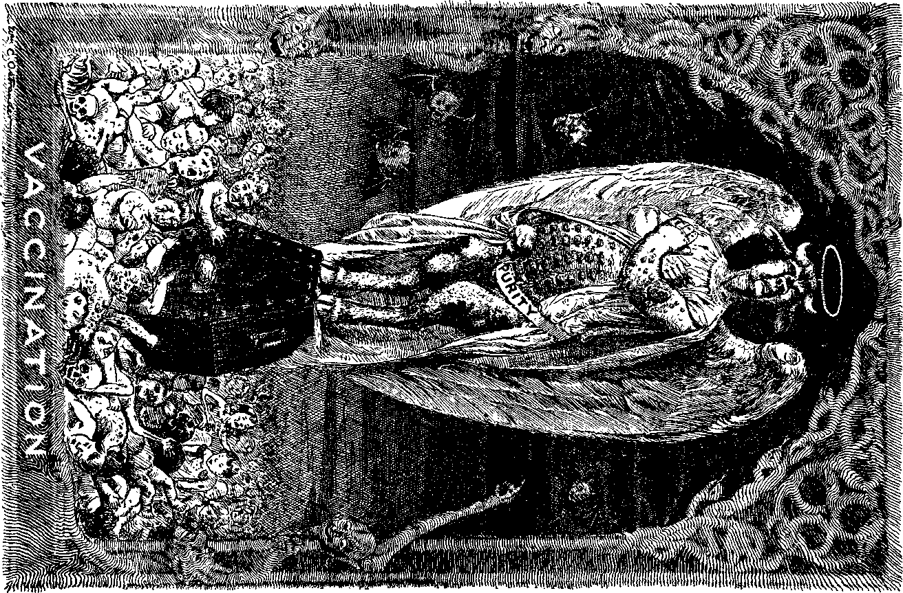
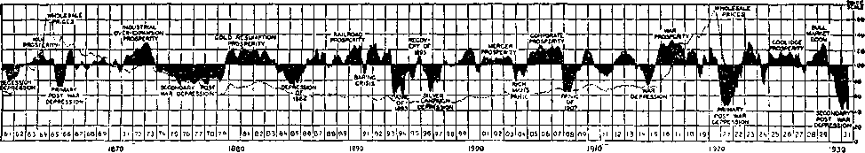

A JOURNAL OF FACT HOPE AND COURAGE
iiiiiiiiiiiiiiiiiiiiiiiiiiiiiiiiiiiiiiiiiiiiiiiiiiiiiiiiiiiiiiiiiiiiiiii
in this issue
DEMONISM
IN ITS LATEST ASPECTS
CHRISTIAN SCIENCE RADIO ESPIONAGE
"NO WAR IN MANCHURIA”
WORTH! .F.SS INFANTILE PARALYSIS SERUM
VACCINATION EXPERIENCES
MAN’S EVERLASTING HOME
lllllllllliltllllilflllllllUlltHllliUlllllllllllllllllllllllllllllllll
every other WEDNESDAY
five cents a copy one dollar a year Canada & Foreign 1.25
Vol. XIII No. 327 March 30, 1932
CONTENTS
LABOR AND ECONOMICS
Wisconsin Unemployment Insurance
Cleveland's Waves of Depression 402
8,300,000 Unemployed in United
SOCIAL AND EDUCATIONAL
Worst Sufferers Make Least Protest
Million People Migrated to Cities in 1931
Black Mountain Coal Corporation 403
Opacity of Untransparent Crystals 404
MANUFACTURING AND MINING
Philippines May Become Large Gold Producer
FINANCE—COMMERCE—TRANSPORTATION
General Electric in Australia . 401
Business Failures in 1931 . . . 402
Largest Financial Institution in
Australia-to-Britain Air Mail . . 402
European Train Service Cuts . . 403
Reconstruction Finance Corporation
Railway Earnings Off One-Third 414
Rise and Fall of American Business Activity
POLITICAL—DOMESTIC AND FOREIGN
Big Business as an Executioner 404 “No War in Manchuria” . . .405 Why the Japanese Grabbed Man
HOME AND HEALTH
Worthless Infantile Paralysis Serum
No Such Thing as Vaccination . 408
Vaccination Experiences in Cleveland
Approved Form of Certificate of
Low Infant Mortality in Palestine ......... 410
TRAVEL AND MISCELLANY
11,500,000 Married Children . . 402
Tortures in Polish Prisons . . . 403
RELIGION AND PHILOSOPHY
Demonism in Its Latest Aspects (Part I)
Christian Science Radio Espionage 397
Australian Clergy Admit the
Man’s Everlasting Home . . . 411
Published every other Wednesday at 117 Adams Street, Brooklyn, N. Y., U. S. A., by WOODWORTH, KNORR & MARTIN
Copartners and Proprietors Address: lit Adams Street, Brooklyn, N. Y., U. S. A. CLAYTON J. WOODWORTH.. Editor ROBERT J. MARTIN .. Business Manager NATHAN H. KNORR.. Secretary and Treasurer
Five Cents a Copy—$1.00 a Yeas Make Remittances to THE GOLDEN AGE
Notice to Subscribers: For your own safety, remit by postal or express money order. We do not, as a rule, send acknowledgment of a renewal or a new subscription. Renewal blank (carrying notice of expiration) Is sent with the journal one month before the subscription expires. Change of address, when requested, may be expected to appear on address label within one month.
Published also in Esperanto, Finnish, German, Japanese, Norwegian, Polish, Swedish.
Offices in Other Countries
British ............ 34 Craven Terrace, London, W. 2, England Canadian...........40 Irwin Avenue, Toronto 5, Ontario, Canada
Australasian......7 Beresford Rd., Strathfleld, N. S. W., Australia
South African..........0 Lelie Street, Cape Town, South Africa
Entered as second-class matter at Brooklyn, N. Y., tinder the Act of March 3, 1879.
Volume XIII Brooklyn, N. Y., Wednesday, March 30, 1932 Number 327
Demonism in Its Latest Aspects (in two Parts)
Part I
MOST of the readers of The Golden Age are well posted on the subject of demonism. In bygone years they made a study of it in the light of the Scriptures, the only standpoint from which it can be understood. Calamities of any kind cause millions to grope for help from unseen powers which man’s very nature leads him to believe, exist. Of those who thus grope, some few are the humble and contrite ones who ‘feel after God if haply they might find Him’. We have faith to believe that the readers of The Golden Age are mostly of this sort. We get our light from the Bible, not from the demons.
An impression has been widely spread, and has gained a large measure of acceptance, that the frequent references in the Scriptures to the casting out of demons are to be understood as concessions by the Lord to the ignorant people of His times, who had the. thought that insanity, sickness, etc., were the work of evil spirits, but that actually there are no such things. A correlated thought is that every person has a demon, constantly associated with him and really a part of him, his worse self, in other words. Neither of these thoughts is correct.
A little reflection would show that if our Lord gave His apostles the power to cast out demons, and that if they exercised that power, as they did, and that if our Lord also exercised that power, obviously those out of whom the demons were cast were without demons at the end of that experience, anyway.
But we have the most positive evidence that Christ Jesus, who while on earth was a man, a perfect man, a perfect substitute for father Adam, not only did not have a demon, but indignantly resented as unwarranted and untrue the suggestion that He did have a demon.
In the eighth chapter of John’s Gospel our Lord had been presenting to the. Jews the evidence that He came from heaven. In the fortyfourth verse He told them something of Satan: that he was a man-killer from the beginning of human history; that he is a liar, and the father of “it”, the father of the original lie of all lies, that a dead person is not really dead, that “ye shall not surely die”. (Gen. 3:1-5) He told these Jews who refused to believe His truthful message that He came from our God, that they were showing Satan’s characteristics, that they had murder in their hearts toward Him, and that they, too, preferred a lie to the truth. (So do many people to this day.)
Then answered the Jews, and said unto him, Say we not well that thou art a Samaritan, and hast a devil? Jesus answered, I have not a devil; but I honour my Father, and ye do dishonour me.—John 8:48,49.
This would be sufficient testimony, but there is other and stronger evidence.
Earlier in our Lord’s ministry there was another somewhat similar experience, at Capernaum, the one just narrated having happened at Jerusalem only six months before His crucifixion. In the incident at Capernaum our Lord had but just begun His ministry. The fame of His wonderful works had spread, and the scribes of the Jewish religion had come down from Jerusalem to see what could be done to destroy His influence. Noting that He was casting out demons, they protested to the people that He was doing this because He was under the control of Beelzebub, the. prince of devils.
Jesus called these wicked men to Him and explained to them in great kindness, and with great plainness of speech, that they were standing on the threshold of the second death because they were telling the people what they must have known was not true, in accusing Him of being obsessed by an evil spirit, when they must have known that His works were good works and that therefore His claims that this
strange power working through Him was the holy spirit of Jehovah God were correct. His statement was:
Verily I say unto you, All sins shall be forgiven unto the sons of men, and blasphemies wherewith soever they shall blaspheme; but he that shall blaspheme against the holy spirit [maliciously attributing to an evil source what could not be denied as a good work, free from sin, selfishness or ambition] hath never forgiveness, but is in danger of eternal damnation; because [says Mark] they said, He hath an unclean spirit.—Mark 3:28-30.
Matthew’s account goes more into detail, showing that the scribes were not to think that the reason why they were in danger of the second death was that they had said something against Jesus Christ. Our Lord even tells them that they might speak against the Son of man and have it forgiven, but that their act of accusing Him of having an evil spirit when they knew such was not the case was such an act of malice as to make it questionable whether they could ever be recovered to a right spirit. In this incident we have the proof of what constitutes one sin unto death; it is malice, a bitter heart so filled with its own devices that it resists the holy spirit and even imputes evil to it.
Although the demons can and do exist outside of human minds, yet in some way they have learned how to intrude upon the minds of certain persons, generally such as are of nervous temperament or those who because of some physical or mental shock, such, for example, as shell shock, have come into a condition where their powers of mental discernment or mental resistance have for the time become lessened. Occasionally, but rarely, the demons have been permitted to have access for a time to some of the Lord’s true people, to touch them, so to speak, but not to do them injury.
The Lord gives a very lucid explanation of conditions in the spirit world, such as might come about where a mind freed from demon control or oppression neglected to become filled with the holy spirit, with the good things which would make it sound and well. He said:
When the unclean spirit is gone out of a man, he walketh through dry places [not necessarily hot places; there is no mention of brimstone here], seeking rest, and findeth none. Then he saith, I will return into my house from whence I came out; and when he is come, he findeth it empty, swept, and garnished. Then goeth he, and taketh with himself seven other spirits more wicked than himself, and they enter in and dwell there: and the last state of that man is worse than the first.—Matt. 12:43-45.
It is easy enough to see how the last state of such a man would be worse than the first. It would be bad enough to act as landlord for one demon at any time; but to have eight demons, each struggling or bidding for a chance to use a man’s mind, while he himself was still trying to hang on to it and use it for his own purposes, could result only in an insanity which would be hopeless except for the relief which the Great Physician alone could provide.
There is an instance in the Scriptures where one poor woman had seven of these demons in her mind—Mary of Magdala, a good woman, too. She was one of the noble band of women (Luke 8:2, 3) which included Susanna and Joanna the wife of Herod’s steward, who followed our Lord from city to city, ministering unto Him of their substance, providing food, doing washing and mending, and arranging home comforts and necessities for the King of kings and Lord of lords. What an opportunity! Mary was one of the faithful ones that followed Jesus even to Calvary itself (Matt. 27:56,57), was at His tomb "when it was yet dark” (John 20:1), and may have been the first one to whom Jesus revealed himself.
It seems difficult to believe that any creature in the universe could be so malicious as to wish to deprive another of the powers of speech and of sight, especially when that person had not injured the transgressor in any way, but had himself been the injured person. But the Scriptures credit just that degree of malice to these evil spirits.
Thus we read, in Luke 11:14, of an instance in which the Lord "was casting out a devil, and it [the obsessed man] was dumb [the demon being unwilling to speak itself or to allow the organism which it had seized to do so]. And it came to pass, when the devil was gone out, the dumb spake; and the people wondered”. It is small wonder that they wondered.
Two similar instances are recorded in the Gospel according to Matthew. The one recorded in Matthew 9:32-34 is probably the same incident as that just narrated; but the case cited in Matthew 12:22 is a still more aggravated one, where sight was withheld as well as speech.
“Then was brought unto him one possessed with a devil, blind and dumb; and he healed him, insomuch that the blind and dumb both spake and saw.”
A different instance is that of the daughter of the Syrophenician woman, the account of which we find in Mark 7:24-30. There we are not told what were the particular acts of uncleanness which the demon performed, but are merely informed that this “young daughter had an unclean spirit”. The uncleanness may have manifested itself in causing the girl to wear unclean clothing, or to be unclean in person or unclean in language. Quite likely the uncleanness was manifested in all of these ways.
In Luke’s Gospel (10:17-21) we have the story of how the seventy returned to the Lord with joy, announcing that through the use of His name even the devils were subject unto them. This* is still the most effective weapon that can be used against them. A Christian man reports that though troubled by the demons more or less all his life he is always able to get relief by going and kneeling before the Lord in prayer and then saying in a firm tone of voice to these evil angels, “I command you in the name of the Lord Jesus Christ to depart.” On such occasions they always depart. Both of these items show that the demons can hear.
The preceding chapter (Luke 9:37-42) narrates an incident of how a man cried out to the Lord, calling His attention to the fact that a demon had been in the habit of imposing himself upon his child, bruising and tearing him, and causing him to foam at the mouth; and even as he was yet speaking “the devil threw him down, and tare him. And Jesus rebuked the unclean spirit, and healed the child, and delivered him again to his father”. The Lord addressed himself not to the child, but to the demon that was in the child.
The account in Mark 7:24-30, where Jesus caused the devil to depart from the daughter of the Syrophenician woman without ever seeing the daughter, shows either that the demon must have had such acute powers of hearing as to understand Jesus’ words from a distance, as is now done by the radio apparatus, or else that the message must have been carried to the demon by some unseen messenger who had heard Jesus’ statement to the poor mother, that because of her faith “the devil is gone out of thy daughter”.
Early in our Lord’s ministry He removed to Capernaum and, as was His custom, went into the synagogue, and taught the people. An incident occurred there which illustrates the ability of the demons to see and hear and reason. We quote the passage, with a few explanatory words thrown in:
And there was in their synagogue a man with an unclean spirit; and he [the demon, not the man, though he no doubt used the man’s vocal organs] cried out, saying, Let us [demons] alone; what have we to do with thee, thou Jesus of Nazareth? art thou come to destroy us? I [the spokesman for myself and other demons] know thee who thou art [I knew you for centuries in the courts of heaven while I was still a holy angel], the Holy One of God. And Jesus rebuked him [the demon, not the man], saying, Hold thy peace, and come out of him. And when the unclean spirit had torn him [his victim], and cried with a loud voice, he came out of him.—Mark 1: 23-26.
Farther down in the same chapter (verse 34) appears the statement that our Lord “cast out many devils; and suffered not the devils to speak, because they knew him”. He was not willing to accept any testimony from such a source. This power granted to Jesus by the heavenly Father, that, though He was human, He yet had power over these spirit creatures, and that they dared not and perhaps could not disobey Him, is a most remarkable thing.
But they were manifestly obedient only for a time; for a little later we read that “unclean spirits, when they saw him, fell down before him, and cried, saying, Thou art the Son of God. And he straitly charged them that they should not make him known”. (Mark 3:11,12) It may be that these were different demons from those addressed in the preceding chapter. Probably so.
We know that there were several incidents of this kind; for Luke in his account (Luke 4:41) explains that “devils also came out of many, crying out, and saying, Thou art Christ the Son of God. And he, rebuking them, suffered them not to say that they knew him to be Christ”. (See marginal reading.)
One of the most instructive cases of our Lord’s contact with the demons is the account of the poor man of Gadara, in Luke 8 : 26-40 and Mark 5:1-20. This man had been troubled with demons for a long time; and though bound with chains, he had broken all his fetters and escaped to the mountains, where he ran about naked, cutting himself with stones and crying aloud.
When Jesus came in sight the demons within this man “saw Jesus afar off” and “ran and worshipped him”, begging Him not to cast them into the “deep” (the same word rendered ‘bottomless pit’ elsewhere in Scripture). Our Lord asked: “What is thy name?” Back came the answer, “My name is Legion; for we [the number of demons in this poor man] are many.” Then our Lord, at the request of these demons, permitted them to enter a great herd of about two thousand swine. They did so; and the swine became insane, and perished in the waters of Galilee. (According to their law the Jews had no right to keep pigs.)
Observe that these demons were completely under the Master's control, and that they could not invade even swine without His consent. Manifestly they could see and speak. The poor man who had been obsessed by this legion of demons became sane immediately upon their leaving him, and became the Lord’s ambassador throughout all that country.
Paul had experiences with the demons somewhat similar to our Lord’s. For many days he was followed by a certain damsel possessed of demons. These demons persisted in calling out, “These men are the servants of the most high God, which shew unto us the way of salvation.” (Acts 16:17) Paul rebuked the spirit or spirits, commanding them to come out of her, in the name of the Lord Jesus. For this act of mercy he and Silas were imprisoned; and perhaps this was the end which the demon had in view.
While the demons as a whole are called “lying spirits” because nothing they may say is to be believed, yet the Scriptures say of some of them that “the devils also believe, and tremble”. (Jas. 2:19) There seems to be some Scriptural ground for hope that some of these may at length be saved when “in the dispensation of the fulness of times”, in the Millennium, Christ shall gather together in one all who are willing to accept the proffered salvation, “both which are in heaven, and which are on earth; even in him.” (Eph. 1: 10) There would seem to be no object in making known “unto the principalities and powers in heavenly places” through the church “the manifold wisdom of God” unless that wisdom is to be used in some way for the salvation of those of them who are worth saving.—Eph. 3:10.
There is a hint of honesty on the part of one of these that is refreshing, when we compare it with the hypocritical way in which some of these modern human disbelievers in the Bible, these haters of saints, these murderers of boys in khaki, these blasphemers of God, these longfaced, whining, begging individuals clothed with the soft garments of the clerical profession, face the truths the Bible contains. We cannot do better than to give this incident in the words of the Scriptures themselves:
Then certain of the vagabond Jews [at Corinth], exorcists, took upon them to call over them which had evil spirits the name of the Lord Jesus, saying, We [unconverted sinners] adjure you by Jesus, whom Paul preacheth. And there were seven sons of one Sceva, a Jew, and chief of the priests, which did so. And the evil spirit answered and said, Jesus I know, and Paul I know; but who are ye? And the man in whom the evil spirit was, leaped on them, and overcame them, and prevailed against them, so that they fled out of that house naked and wounded.—Acts 19: 13-16.
The Scriptures show that the demons have a table and a cup, the counterfeit of the table and cup of the Lord. (1 Cor. 10:21) The table is the wafer which, in the sacrifice of the mass, ‘represents Christ’. The cup is the cup which the priests drink, but which they do not share with the laity. The apostle explains in the preceding verse that much which passes for worship is really offered to demons and is accepted by the demons as offered to them.
The demons also have their own special doctrines. (1 Tim. 4:1) Prominent among these is the original lie that when a man dies he is not dead but more alive than ever. Joined to this is the doctrine of eternal torment, its necessary corollary. If a person cannot die, but must live on forever, then, of course, the wicked must continue in some unhappy state somewhere. But if they can and do die, as the Scriptures scores of times declare is the case, then all the religions that have been based upon the lie are false; and by that test the church organizations of Christendom are false and are the Devil’s churches instead of God's. Search the matter out, and you will find that this is so.
Mankind in general Satan seeks to lead astray; and so successful is he that, the Scriptures declare, “the whole world lieth in the wicked one.” Six thousand years of experience backed by the cooperation of myriads in his organization, visible and invisible, have given him a good knowledge of the methods by which humanity can be turned away from Jehovah God and His worship and service, and turned directly or indirectly toward himself, but “we are not ignorant of his devices”.
After the World War, millions of fathers, mothers, sisters and sweethearts sought consolation regarding the fate of the more than ten million young men slain on the battlefield; and the truth that the dead are. really dead having been carefully concealed from them by 200-odd varieties of ministers of the Devil’s religion, they sought contact with their missing loved ones by methods that are everywhere forbidden in the Scriptures.
Among the multitude of journals that fell into the trap thus prepared by the Devil was The Ladies Home Journal, which unwittingly circulated millions of copies of Satan’s own propaganda in communications purported to come from a dead soldier to his mother, but which Jehovah’s witnesses know came from one of the Devil’s representatives falsely claiming to be the dead soldier, which said soldier was then and is now and will be as dead as though he never had been until such time as he is awakened from the sleep of death in the resurrection morning.
Some of the early subscribers of The Golden Age will well remember Judge Rutherford’s masterly presentation of both sides of this subject in his book of January, 1920, entitled Talking with the Dead? or Can the Living Talk with the Dead? We do not give these arguments here. Those who desire proofs that the dead are dead are advised to read Judge Rutherford’s books The Harp of God and Creation, published subsequently. Either one of these extremely valuable helps to Bible study will be sent to any address upon receipt of thirty cents.
In this article, we henceforth confine ourselves principally to a general review of spiritism as it appears in the public press. Satan and his cohorts are always finding some new way to influence the human mind, though many of the newest ways are merely revivals of some of the oldest ones, for the practice of which Jehovah God pronounced the sentence of death against all the nations that inhabited the land of Canaan at the time Joshua and his forces crossed the Jordan.
Not a word that the big Devil or the little devils say on any subject can be believed, regardless of whether the message comes through a spirit medium, visions, the clairaudient ear, a ouija board or any other board. Persons who have used ouija boards have admitted that these ouija boards lied to them until they can believe nothing that they say.
A ouija board told a mother that the ship on which her son was drowned was bombed by a zeppelin, when it was known that the ship was torpedoed by a submarine. A Chicago woman who was told clairaudiently to go to Danville, after she had packed up to go was told elairau-diently not to go.
Another refined and educated Chicago woman was clairaudiently told she had been appointed to marry a certain man she had only met once. In spite of the protests of her family, she prepared the wedding supper for a set date. The man did not come. She was told he would come the next day, and this was continued from day to day for weeks.
She was finally convinced that she had been married on the spirit plane. At length she was told that her spiritual husband would be at a certain place at a certain time. She went to meet him, but he was not in. She finally found that he was being detained at a sanitarium. So she went to the sanitarium to see him, and finally was sent to one herself.
A demon who had clairaudiently induced his victim to believe that he was the Almighty himself, and who at length was caught in a lie, admitted to his victim that he and his comrades take delight in trying to infuse infidel or atheistic thoughts into the minds of the God-fearing.
A reference to the columns of spiritistic papers shows that their editors and contributors hate and fear the Bible and ridicule it, which, it will be noted, is exactly the same spirit that animates a considerable section of the ministry of so-called “organized religion”.
A favorite line of ridicule of both of these parallel lines of demonism is the Scriptural account of the creation of the earth and of man upon it; another is that of salvation through the blood of Christ. A poor demonized Korean woman shrank away in terror from a Bible when it was placed against her head, but laughed when a hymn book was placed there instead, saying it could not hurt her.
There is not a word in the Scriptures justifying prayers for the dead, yet several varieties of ministers of organized religion encourage such prayers, and a minister of the Church of England, Dean Welldon, in a congress of his church openly advocated “spiritism” and, in the same breath, “intercessions for the departed,” showing that in his judgment the two naturally go together, as, in fact, they actually do.
Though these demons, when they have gained control of the minds of their victims, have gone so far at times as to claim to speak as the voice of the Almighty, yet they not only have lied like troopers, but have encouraged and advocated loose morals, and not only have shown no interest in mankind, but have done nothing for mankind; have supplied them neither wisdom nor comfort, and have produced evil and only evil effects.
The demons are inordinately sexual in the contents of their minds. They encourage selfish acts and endorse theories and principles which, when carried out, enable men who manufacture a necessity of modern life, such as the electric current, for less than three-tenths of a cent per kilowatt hour to charge poor miners $12 a year apiece as a “ready to serve charge” before they give them any current at all, and then for the current they actually consume charge them seventeen times as much as it costs to produce it. Their suggestions debase men, making them little better than brutes.
As these devils who impersonate the dead gradually progress with their work of deception their language changes and becomes more impure, immoral, sinister, blasphemous and obscene. Hints are thrown out that morality is a matter of conventionality. Many women as well as men have been ruined utterly by these debasing suggestions urged upon them when their will power has been destroyed by opening the doors of the mind. Giving heed to seducing spirits makes for hysteria, neurasthenia, insanity and a loose mode of living and free love.
In a world which by his own efforts and with the aid of these, his accursed imps, Satan is always helping to make worse every day that we live, these wicked demons, while pretending to have high moral principles, insult, scold, curse and swear, create discord and confusion and take advantage of people when they are sick, worn out and morbid. In our files we have proofs that these demons have descended to so low a plane as to frighten horses and even cows.
Persistent and repeated efforts to terrify a troop of Italian soldiers by apparitions finally caused four of the poor men to go insane.
Every encyclopedia is obliged to acknowledge the existence of Poltergeist. (The word is of German origin, defined in the dictionary as “a noisy ghost”.) From time to time we have mentioned some of these manifestations in The Golden Age, and will continue to do so as they are brought to our notice.
In October, 1927, at Konnersreuth, North Bavaria, Theresa Neumann was, and perhaps still is, at intervals attacked by wounds not made from without but fashioned from within. These wounds, falsely called “the stigmata of Jesus on the cross”, appear on the hands and feet, side and forehead, and are accompanied with tears of blood.
In October, 1928, at Booysens, a suburb of Johannesburg, South Africa, stones fell repeatedly through the roof in a house but did not leave a hole in the roof. One of these stones, thrown by an invisible hand, struck one of four children. The family moved to Bospoort, another suburb, and similar experiences were repeated. One child in such home is probably obsessed.
In July, 1930, at Rochbique, France, in the home of Jean Bossier, invisible hands slapped the faces of members of the family and even of the police and scientists who undertook to make investigations. Furniture was tumbled about, beds were unmade, fires in the cookstove were extinguished, the faces of the children were scratched, and noises like the rumbling of thunder came from the attic.
Our files contain information from Dublin, Ireland,- of instances where bricks fell down the chimney, hit the floor, and disappeared. Windows and ornaments were broken, pots were smashed; and while the frightened householder was looking at his clock, the hands of the clock disappeared.
In a Minneapolis home, eleven fires were started by demons within a period of thirty hours.
They have been known repeatedly to command their victims to commit suicide, and in some instances their victims have been known to become so infatuated that they have done so in order that they might ‘enter the spirit world’ that much sooner. It is well known that many murders are committed under the direct orders of the demons.
The demons always endeavor to hide their own identity, and in their orders to their victims to commit suicide or murder or what not, they masquerade as friends or guides or, as previously stated, sometimes even as Jesus or the Almighty himself.
How Demons Collect Information
Out of the passive minds and memories of their victims they obtain the information needed to carry on their work of deception, but they occasionally make a slip and reveal the dismal depths of their moral depravity, though even then they are sometimes able to cover it up for years under a mass of platitudes and high-sounding phrases, such as one can hear at any time at a funeral discourse, or from Cadman when he is on the radio.
Because, they were well acquainted with our dead friends and because they have superior powers, the fallen angels well know how to imitate the voices and mannerisms of those who have departed this life. And because they hate Jehovah God they take a special delight in buffeting and hindering, in every way in their power, those who are committed to witnessing to the honor of God’s name; but they are really helpless to do them any harm.
That in most cases the only information the demons can get respecting the affairs of those who come to them for assistance is from their own minds is suggested by the experiences of a man whose letter was published in the London Daily News of January 12, 1929:
Fifty years ago I was persuaded to join some friends in a table-rapping seance. The table responded nobly, lifting one side three times for “Yes” and once for “No”. When my turn came, I asked to speak to my paternal grandfather. Was he there? Three raps. As a test, I asked him how many children he had. The table rapped out “Four”. That was right, my father, his brother and two sisters. Wonderful! I wrote to my father an account of the sitting and he suggested that I must have got hold of the wrong grandfather, as his family included eight children, but four had died young. I had known of only four, and it seems evident that my mind, through magnetism or some other force, was the ruling factor.
Satan Actually Worshiped as Such
In some parts of the earth the demons try to blind the minds of their dupes to the facts by denying the existence of Satan, but certainly in Paris and perhaps in other places there are chapels where Satan is worshiped as such and is called upon by his ancient names of Lucifer, Beelzebub, Ashtaroth and Moloch. We quote a dispatch from Paris which appeared in The News, a New York paper:
A survival of sorcery, witchcraft and the black masses, which were practiced in the days of Cagliostro and the Marquis de Sade, is now sweeping many parts of France. . . . Although these ceremonies occur in various parts of the country, it is said they are all carried out in the same manner. A circle is generally drawn in which the worshipers gather on their knees after marking cabalistic signs on the ground before them. Then bowls of incense are lighted and the priest, standing before a candle-lit altar, invokes the evil spirits. As a rule the invocations are blasphemous in the extreme. Hymns of praise are sung to the devil. Then the Mephistophelian one is asked to bestow worldly riches upon his followers or to fulfill their sinful desires. In return, they promise to give him their souls for eternal damnation.
From those who have sought to investigate the occult or to seek occult help in the cure of disease, we have the testimony that the demons aye evidently as plentiful as the microbes of disease. There seems to be no limit to their number. At times they impress the brain from without, and sometimes from within. That is to say, sometimes in communicating they use the outer ear, and sometimes the inner ear.
When messages from the demons are received, they may at first be recognized as coming from one’s own mind; but after the demons obtain fuller possession of the mind, messages come which are from an unknown source. The more frequently the mind is invaded, the easier of access it becomes. At first the victim is his own master, but gradually loses control and becomes possessed. The mind becomes more and more passive, the control of the demons greater and greater, and the final result is insanity.
The demons evidently have no power to read the minds of those whose wills are strong or of persons who are wholly in harmony with God’s will; but if for any reason the will is weak or not wholly in harmony with God’s will, or if it is willing to disobey God and to turn toward the occult, then there is no question that demons can and do read the mind ahd take out of it what they please for use as they please.
Those who have been in contact with the demons sometimes describe the invasion of their minds as accompanied by a blending of all the lights which flame the avenues of sense. These lights may be bluish, greenish or precipitous, bursting luminaries. Sometimes these lights are outside of the brain, or seem to be. The so-called “star of Bethlehem” was such a light, and at various other times and in recent years great balls of fire have accompanied “revivals” in Wales and the movements of troops in Italy.
Upon the minds of those whom the demons have been able to bring within their power they are able to produce, pictures which the eye does not see. Prophetic News tells of a man who, after he became rebellious at their testimony, saw and heard himself tried and condemned by a council of fallen angels.
In India mass hypnosis, or collective hallucination, is a thing very commonly practiced by the so-called “fakirs”. In the magazine Asia for August, 1931, a writer tells of having heard one of these fakirs addressing a crowd, speaking very rapidly and explaining at some length what he intended to do, namely, set fire to his assistant and watch him go up in smoke. We give his account of what happened:
When the flames had been burning for two or three minutes, a very curious thing happened. A large fly settled on the baek of my neck and instinctively I shook my head and put up my hand to brush it off. The momentary jerk broke the hypnotic spell to which, without knowing it, I had been subjected. I looked at the burning man. He was standing a few feet from me and he was not burning at all! I could scarcely believe my eyes. Then, as suddenly as it had left me, the spell returned and took possession of my senses. It was irresistible. Again I saw the man surrounded by flames, and presently he was consumed and reduced to a little heap of ashes. His comrade stepped forward and picked up some of the ashes and let them flutter to the ground. Suddenly he clapped his hands and stamped his foot, and in front of us was the assistant — exactly as we had first seen him. Neither his clothes nor his person showed the faintest trace of having been in contact with fire so hot that we who had been standing some feet away from him had felt it on our faces.
It may be that the walking across white-hot stones elsewhere described in this issue is to be similarly explained. Mass hypnosis is common in India.
Though it is often claimed that hypnotism is a “scientific” phenomenon, yet there is evidence that the science, if it is a science, is wholly based upon the wisdom of this world, which the apostle truthfully says is “earthly, sensual, devilish”.
There, is no evidence that hypnotism is ever exerted without the aid of demonism, but there is plenty of evidence that the two are closely related.
Thus, when the. American psychologist William James was studying the problem of hypnosis he used in connection with his experiments a ouija board, and when such experiments are now conducted automatic writing is also used in connection therewith, and automatic writing most certainly is demonism.
It is said to be easier to hypnotize an entire group than to hypnotize individuals. Various methods are used, among which are a series of sentences spoken in a monotonous and commanding tone. The constant repetition of creeds, etc., creates a hypnotic condition. Another method of producing hypnosis is by fixing the gaze intently upon some small object, as a coin or the point of a pencil or the nearest point on a crystal.
Hypnosis, which is the willing subjection of one mind to another mind, produces the same results as the domination of a mind by demons. It brings forth out of the mental storehouse, whatever is contained therein, even though the legitimate owner might have been, prior to the period of hypnosis, unable, of his own accord to remember the items thus brought to light.
A gentleman reports that at Nice, France, in February, 1929, he was walking along the street when a stranger asked him a direction and then suggested coffee at a nearby cafe. The gentleman says:
We chatted for about five minutes, when suddenly I felt queer, though I had not touched my coffee. I remember distinctly answering his questions regarding my money, and was powerless to remain silent. We then went to my employer’s office, where I drew a month’s salary and handed it to him. He then told me to take him to my home and get my check book. At the bank I withdrew 6,000 francs and handed it to him. Then I sat on a sidewalk bench, where he left me. It was two o’clock before I regained my will power, although all the time I realized what I had done.
When the man regained his normal control of himself he went to the police with his story and they in turn took him back to the bank. There the tellers verified his story and said the man seemed to be sleep-walking but they could not refuse him his own money when he insisted upon having it.
In December, 1930, after studying the whole subject of hypnotism, the French Academy issued an opinion condemning public exhibitions of it, advising that they be forbidden throughout France on the ground that such public exhibitions could not help having a bad influence.
It is stated that only about one person in four can with comparative ease be completely hypnotized, i.e., put into what is sometimes called the “somnambulistic” state. This indicates to us that the human family still has a measure of the will power originally conferred by our great and wise Creator as its protection against encroachment by others.
The “Materialization” Deception
The power which the demons have of influencing the mind through the. organs of sight and hearing to believe that they actually see and hear what they do not as a matter of fact either see or hear, has on numerous occasions led to what were, supposed by the victims to be, but were actually not, materializations. The deceptions of eye and ear are sometimes extended also to the sense of touch, so that in addition to seeing and hearing, the victim is able also to touch.
A doctor in Chicago was visited in a dimly lighted apartment by his supposed dead sweetheart. Concerning this crooked old fraud (the impersonating demon) that had been lying to people for thousands of years, this poor man says, “She told me that she must go, but first kissed me, and then I put my arms about her and kissed her, but as I did so the young woman, who was as completely material as anything could be, melted away in the atmosphere.”
In other words, after this hoary old son of Satan had convinced this poor man that his sweetheart was still alive, which he did by deceiving him in his organs of sight, hearing and touch, he resumed his usual condition of invisibility, probably continuing to hang around the poor man, who by now is doubtless insane.
McClure’s Magazine narrates a similar case, a very sad one, from every point of view, in which a clergyman was deceived by the supposed materialization of his dead wife, in answer to his entirely unscriptural and, therefore, improper prayers:
“Well, eleven months passed after her death and she did not come to me, in spite of my prayers and longings, and although she was never out of my thoughts for a single day; then one night she came. I was lying in bed and the room was dark, but I saw her as plainly as I see you and I was wide awake, as sane as I am at this moment. I saw my wife! I touched her: I felt her caresses. I heard her voice with its pretty Southern accent that was so familiar. ‘Will, I am here. I have come! ’ These were the first words sho spoke.
“ She stayed there with me for half an hour and we talked about many things, just as we used to talk in real life—about the children, about my work, about my grieving for her. I asked about her condition in the spirit world, but she would tell me nothing; she said she was not allowed to do so.
“It was a different body, a shadowy body, but I could feel it, nevertheless. I could feel it penetrating me, and I recognized her face, her form. It was she! Wait! Listen! Just as you are startled, and, before I knew what I was doing, I had turned on the electrics and in the flood of light I saw that she had disappeared. ‘Oh, dear God, forgive me!’ I cried out. ‘Let her come back!’ Then I turned out the lights in an agony of hope and fear and—my wife came back.
“ ‘Isn’t it possible you dreamed all this?’
“No, no, no! I tell you my wife was there. It is a matter of absolute certainty, just as I am certain that you are there. And she has come back to me again in the same way on four other occasions in the past seventeen years. Each time I have touched her, talked to her, heard her voice plainly. There is no possible doubt about it. There is nothing in my life as certain as this.’’
Please notice that this is the well-considered utterance of an active and successful New York clergyman who preaches twice every Sunday to large congregations, and lectures through the week, a broad-shouldered citizen full of rugged health and vigor, a doctor of divinity, a kind-hearted and trustworthy man, if I am any judge. He declares that his dead wife has come back to him five times, that he has touched her each time, talked with her each time, received precious counsel and comfort from her each time.
There are, however, actual materializations. These occur by a power which the demons possess of being able to draw out of a medium’s body connected streams of the cells of which her body is composed, and then changing the form of these living cells into any desiredappearance. They thus transform the medium into a hideous octopus-like creature, and this is the reason seances occur in a dimly lighted room with the medium in a cabinet so that the circle of investigators cannot discern the horrible scene as it really is.
These streams of cells sometimes come from the finger-tips of the medium; sometimes from the ears; sometimes from her nose; but mostly from her mouth. This stuff which “scientists” have called "ectoplasm” is clammy to the touch, like a snake, and has a certain amount of weight. It is sometimes wet, sometimes dry, sometimes hard and sometimes soft. As ectoplasm exudes from the body of a medium the weight of the medium is reduced to exactly one-half.
The demons use the ectoplasm thus exuded or drawn out of the medium to perform all their phenomena of table-tipping and spirit-rapping, the playing of tambourines and trumpets, the ringing of bells, etc. When a ten-pound table is lifted by a medium, the weight of the medium is increased by approximately the weight of the table.
Those who have read and understood the foregoing can see why the misty clouds were used in the following seances, as recorded in a letter published in The Watchtower:
“After my mother’s death my father married a woman who was a spirit medium, and has since tried to convince me of spiritism. He has given me, repeatedly, accounts of materializing seances which he has attended both in his own home and in other places. He says he has seen as many as fifteen spirits developed at one time, both adults and infants, while the medium sat in her cabinet in view of her audience. He says that sometimes he has seen a misty cloud appear near the ceiling and gradually descend to the floor, taking form as it came down, until it stood upon the floor a solid, tangible human [creature], and would clasp his hand. The hand felt as tangible in his grasp as my own would feel. He says his dead daughters (my sisters) and other friends who are dead have thus appeared to him robed in pure white. Sometimes they would materialize a sparkling lace shawl and hold it up and shake it before him; they would sit down by his side or in his lap and put their arms around his neck and converse with him of their heavenly home, its beauties, its lovely flowers, etc., and of his own future, and of their care for him. Finally they would say, ‘Well, I must go and the hand clasped in his, and which he was holding tightly, would begin to sink out of his grasp, the body would grow thin until objects across the room could be discerned through the almost transparent body; then it would disappear, sometimes going down through the floor. ’ ’
The “Queer-Smelling” Ectoplasm
Despite the fact that the scientists Sir Oliver Lodge and Sir Alfred Wallace, and others who have been flirting with spiritism for years, must know the truth that the ectoplasm is really a part of the medium’s body, yet apparently they like to try to make themselves and other people think that such is not the case, and therefore in one of his writings we find Sir Alfred Wallace narrating at length how in a sealed room he saw eight different representations of people, one of whom was supposed to be a baby which he kissed.
As a matter of fact, what Mr. Wallace kissed was a bunch of cells that belonged to the. body of Mrs. Ross, the medium, which had been dragged out or pushed out of her body for the purpose by one of the old frauds that has been a disgrace for thousands of years.
The novelist H. G. Wells says of this ectoplasm that “it is queer-smelling stuff”. It may be that old Mr. Wallace’s smelling apparatus is not good any more, or maybe in his anxiety to believe a lie he was not as particular as he might be. Be that as it may, we would not enjoy the taste left in his mouth after he had kissed the “baby”.
Dr. James Hyslop, for many years Secretary of the American Society of Psychical Research, said on this point:
We find the estimate of Biblical times more accurate than that of modern science. In other words, we learn that many of these sufferers are literally “possessed of devils, ’ ’ that is, are controlled by bad or mischievous spirits. The evil spirits seem to be as disconcertingly plentiful as the physical disease germs; unable to affect normal human [creatures] they seem to seek as prey those weakened by outside troubles (as disease or disaster) of the sort which disturb relationships between mind and body. Of the existence and persistence of these evil or malicious spirits there is a mass of evidence such as cannot be controverted. The point is that real sins are of the will.
No credence can be placed in anything they say, but they have made the statement respecting themselves that they are composed of one of the so-called “noble” gases (four varieties of these are now known to chemists), i.e., gases which are noninflammable. They claim to be able to see to the limits of the universe and through solid bodies.
At the time this statement was made they were reported in World’s Problems as saying, “It takes time to be able to leave the earth’s influence.” Since that statement was made we have the light on God’s Word showing that since 1918 Satan and his hosts are no longer able to leave the earth’s influence at all and that accounts for the awful multiplying of evils of every sort which we now see going on about us.
(To be continued)
— But see next four pages.
Christian Science Radio Espionage
ALTHOUGH, in the year 1926, the number of Christian Scientists in the United States
■was but 202,098, according to the United States Church Census, and that makes it one of the smallest and least important of the denominations, yet this little band of people maintains the most perfectly organized espionage system and the only actual censorship of free speech now operating in America.
In every important state in the Union the Christian Science people maintain what they call a “Christian Science Committee on Publication”, which watches with meticulous care every public expression of any kind in which the words Christian Science occur. If used in a commendatory way all is well, but if a single word that could be construed as a reflection upon Christian Science is used, then, in violation of every principle of American life and law and custom, an attempt is made to revert to the Dark Ages and to close the mouth of the one who has spoken or written.
The censorship maintained is so strict that, on page 44 of its by-laws, The Church Manual provides that “A member of this church shall not patronize a publishing house or book store that has for sale obnoxious books”. Ponder this rule for a few minutes; it virtually compels every bookseller to be an open or secret Christian Science spy and employee, or else lose their trade.
In the year 1929 the great publishing house of Scribner’s attempted to put out a merely historical and not unfriendly but truthful book entitled Mrs, Eddy, and booksellers all over the country were intimidated by letters from Christian Science churches, notifying them, “We will have to desist from patronizing your company unless the book be removed from sale.”
Readers of The Golden Age are reminded of the experience of R. II. Barber, narrated in Golden Age No. 273. At the conclusion of a lecture in which he did not even mention Christian Science by name, but in which he did observe that “some people who have spent their lives in pain or illness desire a religion that will give them health, and so Satan has several of these to appeal to their weakness”, the alert representative of the “Christian Science Committee on Publication” for the state of Ohio concluded that the shoe fitted; so he first called up Station WHK in verbal protest and followed with a letter in which he sought to prevent Barber from any longer expressing over the air what he believes to be the truth on this subject.
Not many years ago the Christian Science people had a wonderful row among themselves, and a faction of them were fearful of everlasting destruction if they even looked inside of their own papers, yet with unexampled bigotry and effrontery they can and do undertake to close the mouths of other people in no way connected with them, and succeed very well, too, to the shame of America be it said.
Franklin Ford’s station WHAP, New York, is known as a Christian Science station; the attacks which it makes upon the Roman Catholics are the most severe now made in the United States or perhaps in the world. They are relentless and persistent, yet we have never heard of the Roman Catholics’ trying to get the station off the air. The unfairness of such a course, were it attempted, and its utter lack of even the elements of principle, to say nothing of Christianity, is perfectly apparent to everybody. The Christian Science people should have the manliness to take their own medicine.
In one of Judge Rutherford’s talks, broadcast throughout the world recently by means of electrical transcription, he made some observations which he had a perfect right to make and which we reproduce here.
In California the Christian Science “espionage bureau” now functions under the high-sounding name of “Commission on Publication” instead of the somewhat less imposing “Committee on Publication” used by the “bureau” in Ohio. The “commission” in California covered this case, however, in the usual manner. Its letter, signed by Edgar McLeod, was sent to a number of radio stations in northern California. That letter is reproduced here; also the reply to it by Judge Rutherford. (Note that he mentions also station KROW, indicating a general assault.) We are sure all our readers will enjoy it.
THE LETTER FROM THE ESPIONAGE DEPARTMENT
January 21, 1932.
Manager, Station------,
-------, California.
Dear Sir:
Several reports have reached me of an address by Judge Rutherford attacking Christian Science, which was broadcast by electrical transcription from your station at 5 o’clock last Tuesday evening, January 19. I have secured a verified transcript of that portion to which I refer, which reads as follows:
“To deceive the people, Satan brings forth a false remedy. First he induces men to teach that there is no death. You know that many men have long thought that. Jesus said that such was Satan’s first lie. Then Satan gets up a religious organization, falsely attaching the name of Christ thereto, in order to mislead the people. This organization—and I speak with all kindness—is called Christian Science, and teaches that there is no death and that ill health and sickness is a mental conclusion and that men and women can heal and give health to all who exercise faith in the so-ealled ‘science’.
“Each one of these announced remedies is in full contradiction of God’s work, and His announced purpose through Christ. This shows that many persons of good will have been inveigled by the Devil into his trap of so-called ‘Christian Science’ and bodily healed.
“It is true that Jesus did some healing of the sick when He was on earth, but He stated that such was done merely as an example to foreshadow the great work He would do in His kingdom. It has also served to establish faith in the people in Him as the Messiah.
“Insofar as it is possible, Satan uses his power to cause some healing from sickness, and his object is to turn the people away from God and the truth.
“One thing all must admit, that no one who claims to have been healed by so-called Christian Science methods has stayed healed continually, but, in the course of time, sickened and died. Even the healers themselves grow sick and die in like manner. ’ ’
I do not need to call your attention to the fact that the above-quoted remarks were offensive not only to Christian Scientists but to that large body of fair-minded people among your audience who deplore religious controversy. Further, such an address is directly contrary to the announced policy of the Federal Radio Commission that their purpose is to regulate broadcasting in behalf of the public interest, convenience and necessity.
While I assume that you may have been unaware of the character of Judge Rutherford’s address until it was actually put on the air in this particular instance, nevertheless, the matter has been so deeply offensive to Christian Scientists in the Pacific Coast states, and so wholly contrary to public interest, that I desire to be very explicit in informing you that a repetition of a similar broadcast from your station will compel me to file a definite protest with the Federal Radio Commission.
Yours very sincerely, Edgar McLeod
Christian Science Commission on Publication for Northern California
When anybody calls in question anything we or our friends have said, and especially, as in this case, when they have gone to the trouble of securing what purports to be “a verified transcript” of something Judge Rutherford is supposed to have said, it becomes a matter of interest to some of us to know exactly what he did say. The electrical transcription which was broadcast in California is the same as we have here at Brooklyn. We took the trouble to “verify” this ourselves, and we certify that what Judge Rutherford actually said is as below.
To deceive the people Satan brings forth a false remedy. First he induces men to teach that there is no death. You know that many men have long taught that very false doctrine. Jesus said that such was Satan’s first lie. Then Satan gets up a religious organization and falsely attaches the name of Christ thereto in order to mislead the people. This organization— and I speak with all kindness—is called Christian Science, and teaches that there is no death and that ill health or sickness is a mental conclusion, and that men and women can heal and give health to all who exercise faith in the so-called “science”.
Each one of these announced remedies is in full contradiction of God’s Word and His announced purpose through Christ. This shows that many persons of good will have been inveigled by the Devil into his trap of so-called “Christian Science” and bodily healed.
It is true that Jesus did some healing of the sick when He was on earth, but He stated that such was done merely as an example to foreshadow the great work that He would do in His kingdom. It has also served to establish faith of the people in Him as the Messiah.
Insofar as it is possible, Satan uses his power to cause some healing from sickness, and his very object is to turn the people away from God and the truth.
One thing all must admit, that no one who claims to have been healed by the so-called ‘ ‘ Christian Science ’ method ever stayed healed continually, but in the course of time sickened and died, and even the healers themselves grow sick and die in like manner.
A comparison of these two “verifications” is of interest. In the third sentence, instead of merely saying, “You know that many men have long thought that,” Judge Rutherford made the much more important statement that “you know that many men have long taught that very false doctrine”. The word “taught” is a much more important word than “thought”, and by some peculiar circumstance the last three words of Judge Rutherford’s expression were entirely omitted; “very false doctrine” is what he said, and so it is.
In the fourth sentence one word is omitted that Judge Rutherford said, and one word is changed. In the fifth sentence one word is changed. In the sixth sentence one word is changed. In the eighth sentence one word that Judge Rutherford said was omitted. In the eleventh sentence two words were omitted and two words were changed.
It thus appears that in Mr. McLeod’s “verified transcript” of eleven sentences there were thirteen errors. We wonder if we dare slyly suggest to a man of science that ‘thirteen is an unlucky number’.
JUDGE RUTHERFORD’S REPLY
January 25, 1932. Mr. Edgar McLeod, Christian Science Committee
on Publication for Northern California, San Francisco, Calif.
Dear Sir:
Your letter of the 21st addressed to station manager of KROW was forwarded to me. You have quoted several paragraphs from my speech of January 19. I note that you do not call in question a single sentence as to the truth and veracity of the statements made, but you do raise the point that it is offensive and therefore you feel disposed to file a petition of protest with the Federal Radio Commission.
It would be a lamentable condition in America if a man’s mouth was closed from telling the truth, merely because somebody might be offended at the truth. Any law to that effect would be in violation of the Bill of Rights and the Constitution of the United States. The Federal Radio Commission has recognized this and stated that it has no power to regulate speech. It has denied a broadcasting license to one station, I believe, because the owner personally attacked others. This I am not doing. I assure you that I have no personal controversy with anybody and, as the words of my speech were, that what I said is stated in all kindness and I meant no offense to any individual.
As an honest man you surely would admit that the people are entitled to the truth. The Federal Radio Act provides that broadcasting shall be in public interest, public convenience and public necessity. Public convenience is that which is true and upbuilding to the people. Nothing could be of greater interest. The question of life and death is the most important question to individuals. All good people should want to know the truth about it.
If in anything I have misquoted what the Christian Scientists teach, I would be willing and more than willing to retract and apologize for that. I think I am correct in saying that the Christian Scientists teach that there is no death and that ill health and sickness is more of a mental conclusion and that men may be healed by Christian Science healers. If I am wrong in this conclusion as to the teaching of Christian Science, I will much appreciate your sending me a clear and succinct statement as to what Christian Scientists do teach.
I have not any doubt about the fact that there are millions of people of good will who believe in the teaching of Christian Science and they believe it because they have never had a chance to know really what God’s Word teaches about it. It was Jesus who said concerning God’s Word, the Bible, “Thy word is truth.” (John 8: 44) It is Satan the Devil who said, “Ye shall surely not die,” which is another statement for “there is no death”. Concerning this statement, Jesus, the Son of God, with authority stated, in John 8: 44, that Satan is a “liar and a murderer”. Jesus and all the apostles repeatedly stated that death is the result of sin and that death can be eliminated only by the sacrificial value of the life of Jesus; and that only by faith in the shed blood of Christ Jesus can anyone possibly be saved; and that the healing or restoration blessings do not come by the operation of men, but come only through Christ Jesus, and that cannot begin until His kingdom is in full operation. Surely these truths are a vast deal more important than what any man or organization believes or teaches, and anyone who is really honest and wants to know what God has provided for mankind would surely not want to be offended at a statement of what the Bible teaches.
If you can point out one single sentence in my speech, which you quoted, that is contrary to the Scriptures, I will retract it gladly and publish the retraction any place you state. If what I stated is true, then surely even the good people of your organization would not expect me to retract it and they should want to know the truth themselves. I ask you in all fairness, Is it more important for the people to avoid offending some ideas of men or is it more important that they know the truth 1
There are two major political parties in America. The democrat makes a speech which is broadcast by radio. He severely criticizes the doctrines of the republican party and points out the derelictions of the president and other public officers. Do you think for one moment that the Federal Radio Commission or any court in the land could or even would attempt to restrict such speech or to say that the speaker should not be permitted to freely express his views? Would the radio station broadcasting the speech be subject to criticism by some republican who did not like the speech? Do you think the Radio Commission would listen to his protest for one moment ? Republicans and democrats boldly speak against the doctrines of each other, and broadcast their speeches, and everybody in America ought to know that they have the right so to do. Is there any rule in America that permits religious organizations to say that its teachings that are published far and wide shall not be subject to criticism? You well know there is no such law. If individuals are held up to public ridicule, that is a different matter. Doctrines publicly proclaimed which many people know to be false arc certainly open to full discussion, and no court in America or any other judicial body or organization has any right or authority to say this cannot be done. One makes himself ridiculous who tries to make it appear that he has any such right to restrict public speech. If I am wrong in what I say, the radio and the press and public halls are open to you and your colleagues to point out to the people wherein I am wrong. Men ought to be big enough to rise above personalities and to discuss that which is publicly held before the people in an open and fair way, that each one that hears may have the opportunity to decide for himself what is the truth.
Your statement to have the Federal Radio Commission regulate my speech is entirely out of order. You might tell somebody that doesn’t know, that you have such right and the Commission has such authority to chastise a station for such utterance. It will probably be just as well to not make threats to radio stations that you will make them responsible for what I say. I am personally responsible for what I say, and if there is any liability under any law in America, I can be reached personally. But I submit, Mr. McLeod, that you are acting in bad taste and in an un-American way, to say the least of it, to try to put the gag in anybody’s mouth and to prevent them from telling what the Bible plainly teaches, even if you could do so.
Very respectfully, (Signed) J. F. Rutherford.
Australian Clergy Admit the Facts
WE HAVE here in America some two hundred different kinds of clergymen, and no doubt most of these varieties are to be found in Australia, where, however, the dominant church is the Church of England.
The traditional attitude of the clergy of all these two hundred sects, of which the Church of England is but one, is that it does not lie within the power of Almighty God, Creator of heaven and earth, to send them any kind of message, or to serve them with any kind of notice. Each and every representative of the two hundred varieties knows it all, despite the fact that no two of them agree on any subject, and all of them are either open or secret antagonists of the Scriptures, man’s only safe guide.
Some of the prominent representatives of the Church of England, notably the bishop of Birmingham, let no opportunity pass to openly ridicule the Scriptures in the pulpit itself. The object, of course, is to try to turn the confidence and the worship of the people awray from God and His Word, and to turn it to these men that have been and are traitors to all three.
Nevertheless, though he writhed in pain while he did it, the spokesman of the Church of England in Australia, writing in The Church Chronicle, published at Ballarat, has been forced to admit service of the Great Warrant issued at Columbus, Ohio, July 26, 1931.
The Church Chronicle is quite a large paper, and four pages are given up, in its issue of November 15,1931, to a consideration of the work now being done by Jehovah’s witnesses in the earth.
There are the usual foolish charges that those who are helping the people to understand the Scriptures by showing them, over the radio, and from door to door, the prophecies that have recently been fulfilled, or are in course of fulfilment, are doing it only from selfish motives.
That was the very charge that was made against Christ Jesus, and made by the very same crowd. Themselves animated only by a lust for power, and even stooping to foreclose mortgages on widows’ houses, they accused Jesus of performing miracles by the power of Beelzebub and denounced the truths that might have saved them from the second death as rank blasphemy.
The writer of the review in The Church Chronicle made a number of quotations from Reconciliation and Deliverance, and at least one from The Harp of God. Better books were never in his hands. Had he had a good and honest heart he could not have read these three books-without receiving a great blessing. He cites Harp, p. 92; Deliverance, pp. 38, 91, 202, 245, 249, 271, and Reconciliation, pp. 101, 111, 113, 114 and 259. Look up the pages cited and get a blessing yourself, anyway.
He gives a very good outline of the work in fourteen of the countries in which Jehovah’s work in the earth is being carried on. Those who do the work are called 'perverts’. His friends and colleagues in the Jewish ministry called Jesus a Samaritan and a bastard. One of them shamefacedly admitted the other day that neither Jesus nor His apostles would today be acceptable members of any "respectable” "church”! Jesus admitted that in a den of thieves He felt out of place.
Under a subhead entitled "Hitting the Heads” the writer in The Chur ch Chronicle says, "Every advantage is taken of the concessions made by kindly governments toward the institutions of the church?’ Japan is one of these, let us say, as witness Korea, Manchuria, Shanghai, and Australia when its turn conies. Britain is one, and her red claws may be seen dripping in every corner of the globe. The United States is one, and the only reason she has not as bad a record as Britain is because she has not been in existence so long. Poland is one, and its treatment of minorities within its gates is such that it is unprintable. Kindly governments. Kindly!
The real point in The Church Chronicle review is contained in the following, which is so good that we reproduce it in full:
Urgency is stressed that “the servant class’’ as Jehovah’s witnesses must he faithful, because the time is drawing to its close, and the day of slaughter is almost upon us. It is put this way: “Jehovah has therefore laid upon His witnesses the duty and obligation to give this information to the people before His forces rise up to the great slaughter. ’ ’
In a speech made at the Columbus Convention, reported in The Messenger, July 30, 1931, the official report quotes J. F. Rutherford as saying:
“The prophecy therefore outlines the work of the servant class in this day of judgment and is another corroborative proof that the ‘servant’ class must carry the message of warning to the governments and peoples.”
In other words, the message is: ‘Go out and place the books we are publishing. It is a burden laid upon you by the prophets. ’ He then gave this text and application of what he says is shortly to happen:
“As soon as the witness work is completed the destructive work begins, as shown ’by these words of the prophet: ‘And to the [six] others he said in mine hearing, Go ye after him [the one with the writer’s inkhorn] through the city and smite; let not your eye spare, neither have ye pity; slay utterly old and young, both maids and children, and women; but come not near any man upon whom is the mark; and begin at my sanctuary; then they began at the ancient men which were before the house, and he said unto them, Defile the house, fill the courts with the slain; and they went forth, and slew in the city.’ (Ezek. 9: 5-7) This work of destroying will not be performed by any of the ‘servant’ class on earth, or in fact by any men on earth, but will be performed by the angels of the Lord under the direction of Christ Jesus, the great Executive Officer. This destruction was foreshadowed by the destruction of Jerusalem and in other destructive work that the Lord did upon His enemies.
“Jehovah has therefore laid upon His witnesses the duty and obligation to give this information to the people before His forces rise up to the great slaughter. ’ ’
The foregoing contains the positive proof that the clergy of the Church of England in Australia have received their warning from Almighty God. What they have said in vituperation of those who have brought them the message means nothing. That was to be expected.
In many places the clergy have refused to accept the above message as it was brought to them, free of cost, in The Kingdom, The Hope of the World; in other places they have destroyed the booklet. But these petty acts of contempt of the Highest Court will not save them in Armageddon.
It is a rule of law that where a defendant is being served with a process, and he refuses it or destroys it, it is conclusive evidence that he has been served. The defendants in this case have acknowledged service and have invited the destruction at the hands of the Almighty God which will surely follow when He ‘rises up to the prey’ in the days that are at hand. How much better to be called a ‘dupe’ and a ‘pervert’ than to be on the Devil’s side and be esteemed wise according to the wisdom of this world.
“Lo, they have forsaken the Word of the Lord and what wisdom is in them?”
Union with Rome
rDHE pope has invited all other churches to -*■ unite with Rome on the basis that Mary is the mother of God and is queen of heaven. Neither of these propositions is either Scriptural or true. The titles have been manufactured and have no basis either in reason or in the Word of God. None but theologians believe that Jesus was His own father and that Jehovah is the son of himself; and they do not believe it, because they do not understand it, and it is not understandable, because not true or possible.
General Electric in Australia
COINCIDENT with the ousting of labor from the control of Australia, the General Electric Company has entered the country and taken over all its most important electrical industries. Three new corporations have been formed, to cover respectively the engineering, merchandise and refrigerator fields, and into these the former electrical enterprises of the commonwealth have gone, head, tail and wings. The General Electric is now the dominant electrical enterprise of England, France, Germany, Italy, Spain and Australia and has important influence in Holland and Brazil.
Facets of the Day
Worst Sufferers Make Least Protest Million People Migrated to Cities in 1931
0TUDENTS of the depression have noted that TXT HEN business depression got well into its there has been an almost criminal discrimi- »V stride, it was the small industries that
nation against the Negro, but that while he has suffered the most, he has said the least and his spirit has been the most hopeful. That is a fine tribute to a worthy people.
BUSINESS failures in 1931 numbered 26,381, which is an all-time record. Of these, 1,556 were bank failures. The liabilities of the banks that failed amounted to $1,475,290,000, or 65 percent of the total, and amounted to more than twice the total liabilities of all kinds in the year 1929.
Wisconsin Unemployment Insurance
BEGINNING next year Wisconsin employers of ten or more persons must tax their pay rolls 2 percent until a fund of $75 has been built up for each employee. Out of this fund employees receiving less than $1,500 a year will be paid $10 a week for ten weeks from the time they are laid off.
THE largest financial institution in the world is said to be the Metropolitan Life Insurance Company, with assets amounting to $3,590,115,653. Its business last year was the largest in its history. On December 31, 1931, the company had in force life insurance amounting to $19,447,343,949.
TWO years ago, when the marriage of girls under 14 or boys under 18 was made illegal, there were in India 8,500,000 wives and 3,000,000 husbands under 15 years of age. Within the past year one Hindu mother was fined for permitting her 3-year-old daughter to become the bride of a 7-year-old boy.
THE first air mail service from Australia to
Britain arrived in Britain on December 16 carrying 50,000 letters. It is hoped that soon there may be a regular fortnightly service. It is believed that the flying time can be cut down from thirteen days to twelve, and, by night flying, to eight. The first voyages from England to Australia required nine months to make the trip one way.
had to go overboard. The result was that in the year 1931 one million persons hitherto employed in small towns or in agriculture in the district east of the Mississippi left their homes and sought employment in fifty-two cities. Onefourth of the number came to New York city alone, while 200,000 went to Chicago and 50,000 to Philadelphia.
COHERE is a possibility that the Philippines will shortly become a large gold producer; indeed, enthusiasts in the islands themselves have made the claim that they expect the mountain provinces of Baguio to become the greatest gold-producing center in the world. This seems improbable, its basis of fact resting in recent discoveries of ore running as high as $3,000 to the ton. South Africa still remains the banner gold-producing country.
IN THE last twenty years Cleveland has had four waves of depression, each more severe than the one just preceding. In 1912 the Associated Charities had about 2,800 families under its care; early in 1915, after a period of intervening prosperity, came another spasm in which the number of families under care rose to 4,458. Then came seven good years, and in March, 1922, the number under care rose to 8,132. Then came the big boom, which lasted until November, 1929. Since then the number of families under care steadily increased until in October, 1931, it was 13,240.
Oscar Ameringer, writing in The American Guardian, says:
Oh, fellow men, here today, gone tomorrow, why all this silly, sordid struggle for things that rot and rust ? Life is so short, so sweet, so dear! A few drops out of the ocean of eternity, enriched by friendship, love, beauty and peace, none of which can be bought with all the gold of the earth. And you throw all this aside for golden ladders leading to nowhere! ... It is better to give than to take, better to love your neighbors than to hate them, better to sheathe the sword than to live by the sword, better to do unto others as you would have them do unto you than doing everybody you can.
AN ILLUSTRATION of how severe the depression is in Europe may be gathered from the fact that the express service from London to Lausanne, Switzerland, which formerly was of daily occurrence now runs but once a week. Other important daily trains have been made semi-weeklies.
THE American Federation of Labor puts the army of unemployed in the United States at 8,300,000, or 23.1 percent of the total of workers in the country. Sixty-two percent are out of work in buildings, fifty-one percent among musicians, and forty-two percent in clothing, textiles and other manufactures. The Federation proposes cutting the work week to five days of seven hours each.
THE Reconstruction Finance Corporation is a plan by which the American people as a whole permit themselves to bet two billion dollars of their own money that businesses which have recently failed, or which are about to fail, will revive or will continue to survive. Some of the money will go to railroads, some to banks, and some to insurance companies. If they cannot repay the loans, then the Government may take over their properties and we may have socialism by what may be called a natural method.
THE Manchester Guardian has a three-column article showing that Poland maintains its reputation as the most cruel jailer in the world. Prisoners are beaten with a rubber cudgel until the pain transcends all human endurance; they are made the ball in games of football and punchball; they are made to trot or gallop on all fours with a policeman sitting on the back; they are suspended head downward over a pail of water and the head submerged until they lose consciousness; and they are hoisted to the ceiling by a cord attached to the wrists after the hands have first been tied behind the back. All this is being done today in Catholic Poland, one of the most strictly Catholic countries in the world. On Christmas Day Mr. Ratti urged everybody to become Catholics. If they would only do this, then we could have all over the world the same things that they have in Poland.
ODD items of news streak through from Russia. Eighty-six men wTere caught with forged ration cards; they received up to ten years in prison. Four railroad men were involved in causing a wreck; they were sentenced to be shot. A Russian was hired to kill the Japanese ambassador, and Russia published it to the world; the Czechoslovak delegate had to leave for home, and the much-desired war between Russia and Japan will have to be postponed until Big Business can think of some better way to start it.
DURING the year 1931 bank depositors had $1,500,000,000 of their money tied up in banks which had to close their doors. We now have 8,000 closed banks in the United States. No doubt many of the depositors in these banks are sorry they did not put their money in the Postal Savings Bank, where it would be safe, and where they could get it when they want it. The suggestion is made, and we think it a good one, that the Postal Savings Bank should open a department for checking accounts. Such an arrangement would be appreciated by multitudes of people, and the effect of such an arrangement upon banks in general would be good, as it would tend to discourage the speculating which has placed so many banks in the hands of the examiners.
WHEN Mr. and Mrs. Harry Appleman, Evarts, Ky., decided to give a carload of flour to the families of starving miners instead of buying a new automobile they had no idea they were doing anything wrong, but as soon as they made the announcement that the flour would be given away they were indicted for criminal syndicalism. When they sought an explanation the prosecuting attorney explained that the Black Mountain Coal Corporation did not like her husband, and admitted the reason they did not like him was that he was feeding starving children. Must be a nice corporation to work for, and a nice kind of prosecuting attorney. Kentucky is being advertised to the world in a way that will do it millions of dollars’ worth of damage.
Big Business as an Executioner
IN ITS guise of public executioner Big Business, which has muddled mankind into its present economic dilemma, does not present a pretty picture. No disinterested person that has ever carefully examined the evidence questions that Sacco and Vanzetti were murdered or that Mooney is falsely imprisoned by Big Business.
It now appears that Kentucky is to furnish us with another of these cases which provide employment for detectives of a certain class, and for lawyers and judges who are not particular how they get their money, so long as they get it. Plenty of detectives stand ready to obtain evidence of any kind, about anybody. When there is no evidence they manufacture it.
The following letter by W. B. Jones, Evarts, Ky., published in the Knoxville News-Sentinel is enough to move the heart of anybody who has one. For publishing this and other similar letters the ruling judge has denied access to the court room to any representative of the News-Sentinel. When Big Business is planning an execution it is inconvenient to have publicity.
Again I am asking the world what is wrong with Harlan County, Kentucky?
I came to Black Mountain, August 17, 1930, and went to work for the Black Mountain Coal Corporation. I came from Ohio, this being my first time to work in this state. I began work for the above company on August 18, 1930, and continued to work for them until March 9, 1931, when I was discharged for being a union miner.
I was given a notice to vacate the company property, which I did, moving from Black Mountain to Evarts, some two miles distant. There I continued to be secretary of the United Mine Workers of America. Then on May 5, there was a battle about one-quarter mile west of Evarts in which four men were killed. I did not know at the time where the fight was or what it was about, and I do not to this day know what the fight was about and I do not know who were the participants—only that four men were killed. At the time the fight was going on I was in my office at work, three-quarters of a mile away. . . . But today I stand convicted of murder and face the rest of my life in prison for something I did not do and something that I had no knowledge of.
And I am asking why I have been made to stand the blame of this crime, as I had nothing to do with it in any way.
I never had any trouble in my life and I have never been arrested before, and I have not owned a gun in 25 years. I do not drink strong drink of any kind; I do not gamble; and in every speech I have made I have advised the people to obey the law.
I have a wife and seven children. I have tried to teach my family right, and to give them an education. I am a poor man doing hard labor for a living. I have always paid my honest debts, and today I am wondering what it is all about, and I am asking why in the name of justice and right I have been disgraced in this manner.
I was the secretary for the local union of the U. M. W. of A. at Evarts. I served my local honestly and tried to get every one to obey the law. But in the closing address to the jury, Prosecutor W. C. Hamilton of Montgomery County accused me of being a Communist, and he made several more disgraceful remarks about my character which were not true. This was done for no other purpose only to influence the jury, and he was very successful in this.
But I want to say that I have never had any affiliation with any Red organization. I have been a member of the U. M. W. of A. for 29 years. I have always been patriotic and loyal in every respect to my country. And I am asking the waiting world what more is required of a man in this state to be a citizen.
I would like to hear from some good citizen of the U. S. A. about this matter. As I have stated above, I have a wife and seven children. These little ones and my wife need me and my care. My God! What will they do ? Must I serve the rest of my life in prison for a crime I did not commit, while my wife and babies starve? God forbid.
Opacity of Untransparent Crystals
By Margaret Carson (Ontario)
TV/TY FATHER is eighty-two. His sole duties now consist of keeping the walk clear of snow in winter and hoeing in the garden in summer. When the postman brings a new Golden Age these chores are completely ignored and he sits down at once and “gobbles it up”. Then the family get a peep at it. Dad got the first copy and hasn’t missed one since.
In the second last copy the title of the short articles was “Frost in the Air”. After he had read the whole page he came with a puzzled look on his face and said, “This says ‘Frost in the Air’, and I have read the whole page and there is not a word about the weather!” This time we have “Pepper and Salt”. Whatever the title, we all enjoy the articles.
A few months ago I wrote you about the largest hospital in Toronto as using aluminum cooking utensils entirely. Now I have heard from a pretty reliable source that at much expense they have discarded all aluminum in the place.
“No War in Manchuria”
A FRIEND has sent ns a copy of The China Weekly Review of October 10, 1931, published in Shanghai. It contains a letter written at Mukden, October 2, explaining how the Japanese occupation of Manchuria began.
On the night of September 18 unknown persons, probably Japanese soldiers detailed for the purpose, blew up some five yards of railway track in front of a camp where 10,000 Chinese soldiers were asleep. This served to fix the blame upon the Chinese, whom nobody in Mukden believes guilty.
Within about half an hour heavy guns began to bombard the Chinese camp, with the result that 300 Chinese soldiers were killed.
The facts in the situation are that these heavy guns or howitzers were all fired from fixed positions within the Japanese Concession, which is approximately five miles from the North Barracks. The disclosure of this information led to some interesting discoveries regarding which the Chinese apparently were and still are unaware. What happened was this: For many months or possibly years, the Japanese have had heavy guns standing on prepared concrete positions within the Japanese Concession at Mukden, and each of these guns has been kept trained constantly on some particular Chinese position such as the North Barracks, the East Barracks, the Big Arsenal and the Trench-Mortar Arsenal (recently converted into a motor-truck factory). These guns apparently were brought into the concession piecemeal from Japan in packing cases and transported to their positions at night. Temporary buildings constructed of corrugated sheet-iron were constructed over the guns; hence they were effectively concealed until they were needed, when one side of the buildings was knocked out and the guns were all ready for firing, as the exact range of the targets had been determined beforehand. Two of these buildings, still in a dilapidated state from the heavy concussion, may still be observed on a plot of ground near the Japanese barracks in the Japanese Concession at Mukden. It was the firing of these heavy guns which did the havoc and enabled the comparatively small force of Japanese infantry to capture the North Barracks. The fact that these guns were already in position and awaiting the emergency has naturally been omitted from the official reports handed out for public consumption by the Japanese military authorities. These heavy guns with their exploding shells, comparable somewhat to those used by the Germans in smashing their way through the Belgian fortifications at the beginning of the World War, naturally paralyzed Chinese resistance and did tremendous havoc to life and property.
It is admitted by Japanese sources that between forty and fifty airplanes bought by the Chinese authorities in Mukden from foreign firms have been seized by the Japanese troops, their markings painted out and in their place Japanese markings painted on. These stolen aeroplanes probably are some of those with which the Japanese have been bombarding trains and troops so successfully. This also, we are left to suppose, is Japanese respect for property belonging to other people. These aeroplanes were supplied by British, French and Czechoslovakian firms. The representative of Skoda, the famous Czechoslovakian firm, according to Reuter from Peiping, protested to the Japanese military authorities in Mukden regarding the seizure of the aeroplanes supplied to the Chinese authorities by his firm. In reply he was told that it was necessary to seize them (no reason given) and that their seizure was effected under Regulation 53. This famous regulation is Article 53 of Section 3 of the Hague Convention of 1907. This convention deals with war on land and the regulations are, by international agreement, to be in force only in time of war, that is, after an ultimatum has been sent and war formally declared.
Thus we have Japan’s representative in Geneva assuring Europe that there is nothing in the nature of war in Manchuria while the representatives of the Japanese War Office in Mukden are invoking war regulations to cover what after all amounts to common theft.
Next we have the assertion that no Japanese aeroplanes have fired on Chinese passenger trains on the Peking-Mukden railway. Against this lying story there is a good deal of contra-evidence. There is the evidence of Mr. J. D. Thomson, a British subject and manager of this particular railway, who was on the train when it was peppered with machine guns on September 24, and there is the evidence of every passenger on that train. Last, but bjr no means least, there were the dead bodies of two Chinese passengers killed by machine gun bullets while the train was traveling and several Chinese passengers wounded by bullets from the same source; and there is the evidence of scores of bullet marks on the train. From the evidence of Mr. Thomson and others there is no earthly doubt that the firing came from the air; and therefore the ‘bandit’ suggestion must be ruled out, for bandits in China have not yet come to the state where they raid the country and railway trains in airplanes. Even the Japanese are not so ridiculous as to make that suggestion.
It is admitted by the Japanese military authorities that they have seized all Chinese aircraft in Mukden, which means all in Manchuria, therefore the firing could not have been done by Chinese airmen on Chinese trains and passengers. There is but one possibility left, that it was done by over-zealous Japanese aviators—a scandalous and dastardly outrage which we feel confident will sometime be brought to the notice of civilized nations, together with the lies uttered in Geneva in the name of the Imperial Japanese Government.
And in spite of all this Japan continues to declare that there is nothing in the nature of war going on in Manchuria. Is it not war when, without warning of any kind, an army opens fire on a peaceful sleeping town, destroying property and lives and forcibly occupying not only that town but half of a country ?
Is it not a state of war when Japanese aeroplanes, according to Japanese reports, cover vast stretches of peaceful country and wherever garrisons of Chinese troops are found, mercilessly and without warning drop bombs on them and their barracks, these troops, to the knowledge of the Japanese, being under’ strict orders not to retaliate? Wherever a body of a few hundred troops has been found this has been done. The excuse always is, of course, that they are gathering to attack the Japanese forces,—an absurd excuse. It is stated by the Japanese that at the time of the initial clash there were 220,00!) Chinese troops in Manchuria. Does Japan really expect these men, who have obeyed orders in falling back and avoiding collisions with the Japanese, to live only in dozens in order to avoid these trumpery charges and the bombing outrages done in the name of those charges?
Another article in the same journal says:
Japan could not have chosen a more opportune moment for invading Manchuria. The disastrous flood in Central China had completely paralyzed trade and commerce in the Yangtsze Valley, wiped out a considerable portion of the population, rendered millions homeless and considerably affected the financial equilibrium of the entire country. The Japanese military tiger descended upon Manchuria without warning, contrary to international law and usage, at a time when the people of the country were and still are utilizing all their available resources to afford succor to the destitute famine victims. What would the world have said to the nation that was uncivilized enough to invade Japan without warning at a time when she had her great earthquake?
To lend courage to Japan’s bold move, Great Britain is now having serious financial difficulties and there were murmurings of mutiny in the British navy, while the United States is suffering from a very bad business depression. There is reason to suspect that the Japanese militarists felt quite confident of the League of Nations’ inability to punish a powerful member of the Council before embarking on a serious enterprise like the invasion of Manchuria. Japan had chosen the right moment for her well-laid plans, the blow was struck at China when the disastrous flood had upset her whole structure and internal political dissension had greatly impaired her external resistance.
By closing the banks in Mukden and probably taking away a huge supply of gold reserve, the Japanese virtually forced the shops in occupied Chinese territory to close down. Since everyone who ventures out in the streets has to carry a passport issued by the Japanese authorities, Chinese of the higher class do not dare venture outdoors. This situation has created the grave possibility of a new famine—under Japanese auspices. Refugees have been pouring out of the occupied zone by tens of thousands daily with only one thought in view, and that is to get away from the Japanese invaders—and bombs have been thrown from Japanese airplanes upon these same refugees.
In the second place, Japan has violated Section II of the Annex Regulations of the Convention relating to Land Warfare of both the 1899 and 1907 Hague Conventions to which sire was a signatory when she shelled the Mukden Arsenal and the North Camp without warning. Article 26 says: “The officer in command of an attacking force must, before commencing a bombardment, except in cases of assault, do all in his power to warn the authorities.” Of course, the Japanese can say that the shelling of Mukden was an assault,—an assault without a declaration of war. The fact must not be overlooked that when the Japanese troops crept stealthily into the Mukden Arsenal at 2 a.m. on that fateful morning, they threw handgrenades into the sleeping quarters of unarmed sleeping workmen and blew up about twenty of them into pieces all at once.
Why the Japanese Grabbed Manchuria
(Reprinted from Justice, Shanghai)
APART from the question of foodstuffs, Japan depends on the other natural resources of Manchuria for her industry, such as iron, coal, etc. With an abundance of these forms of natural wealth Manchuria becomes naturally the object of Japan’s envy; the South Manchuria railway zone and Dairen are the results of Japan’s past labors of economic penetration. Here we find the headquarters for the execution of Japan’s design of exploiting Manchuria. With the keen competition caused by Chinese railways in Manchuria during recent years, the prosperity of the South Manchuria Railway has been greatly affected. In view of the inauguration of the extensive program for the development of the Hulutao harbor Japan feels much anxiety over the prosperity of Dairen. The following statistics for the last five years showing the net profit which has accrued to the South Manchuria Railway Company show a marked decline in the financial return of the railway:
1926 Y34,158,000 Net Profit
The sharp decline in the net profit of 1930 presents a striking feature of the competition offered by the Chinese railways which made the Japanese speed up with their positive policy.
Worthless Infantile Paralysis Serum By Emanuel M. Josephson, M.D. (N.Y.)
IN THE latter part of the year 1931 I preferred charges with Governor Roosevelt of New York state that citizens of the state had been needlessly experimented upon by the intra-spinal application of a serum for the cure of poliomyelitis (infantile paralysis), which serum it has been known for many years to the medical profession is of no value for the purpose for which it was advertised.
I have charged that not only was the “immune serum” of no value clinically, but that the public w’ere deliberately deceived into the belief that it had superior virtues, and thus a large artificial market for it was created. In supplying this market, care was taken to create an artificial shortage.
The pretended shortage of available serum enabled the New York Academy of Medicine to experiment on humans. It enabled them to determine whether a greater number of victims of the disease who had been denied the serum on the false ground of pretended shortage of serum would die or be maimed. It is difficult to conceive that the Academy could have a more brutal or dishonest motive for its misrepresentation to the public.
This gave the Academy of Medicine a complete corner of available therapeutic serum acceptable to the public and enabled the Academy to profiteer in the sale of its “cure” to even the charity patients of municipal hospitals, and to thus rob the public. The intraspinal application of the serum was fraught with danger to the health and lives of the victims.
Though the cost of the average dose of serum to the Academy was nominal, it charged a minimal fee of $25 to every patient from whom it could be collected. The Academy continued in its sale of the serum even after the members of the Committee had themselves pronounced it to be valueless.
In the 1916 epidemic, in a series of 42 cases reported by Dr. Schwartz, in 21 of the cases the serum was used and 14 became paralyzed; in the cases where no serum was used, only nine became paralyzed. These facts are well known to the medical profession. When deaths occurred directly due to the intraspinal injection of the serum they have been reported as Status-Thymo Lymphaticus, which is merely a means of concealing the truth of what happened.
On November 28 I received a letter from Mrs. Diana Zanger, of 1025 Gerard Ave., in which she said, in part:
On August 19 my boy, 9| years old, became ill. We took him to the Morrisania Hospital at 168th St. and Walton Ave., Bronx. While admitting my child, who was so very ill, a Dr. Spunt came in and told me it was necessary to use serum and it would cost $25. I am an American and had been reading the paper, but never noticed a fee for serum mentioned. I spoke of this to Dr. Spunt and he informed me there was a charge for it at all times. (The Morrisania Hospital is a municipal hospital for charity cases.) I asked what if I could not afford to pay for it. He very kindly informed me that if I did not have the money they would have to try transfusion of horse serum, which did not help. Of course, being a mother, and so frightened, I borrowed the $25 to pay for it. I sat with my dear child for three hours before Dr. Leader (agent of the New York Academy of Medicine) came. And for information sake, my child died anyway. I have not been able to write you before this, as my heart is broken.
When I made my charges to the governor they were placed in the hands of Thomas Par-ran, Jr., M.D., state health commissioner, and I then learned that Dr. Parran was also involved in the sale of the worthless serum. This is my first experience of observing the accomplice in a crime sit as judge, jury and defense counsel in a case.
But perhaps my first experience may not be my last, because, for having aired publicly in New York and in Albany that the serum sold under such high-pressure salesmanship plans was and is valueless for the purpose for which it was sold, I have incurred the wrath of the New York Medical Society and it has already been hinted to me that because of this they will try to 'discipline’ me. Thus I am confronted with the same conditions at home as confronted me at Albany.
If it is an error to rise in defense of the public and of public health in protest against the activities of the inner ring of the organized medical profession, which there is ample reason to believe spells death to many innocent victims among the public, then I am in error, but if an honest man in the medical profession may not do that, pray what does our boasted liberty in this country amount to?
No Such Thing as Vaccination
THE word "vaccination” means ‘cowpoxing’, and there is not a manufacturer of vaccine virus in the world today that can prove that the vaccines he makes and sells are of exclusively cowpox origin. It is well known that many of the so-called ‘vaccine viruses’ have their origin in smallpox sources even though they he later modified by being passed through calves’ blood.
Smallpox came originally from Arabia. It was spread in England through the practice of inoculation (infection with smallpox seed) until 1840, when the practice was prohibited by law. What is now called “vaccination” is really variolation, or smallpoxing instead of cowpoxing. Not infrequently variolation, instead of preventing smallpox, actually causes it.
For the nineteen years before 1721 there was not a single case of smallpox in Boston. Cotton Mather then introduced the now illegal practice of inoculation with smallpox seed. In 1792 there were 8,346 cases of smallpox in the city, 8,114 of them from inoculation; there were five times as many deaths from the inoculation cases as from natural smallpox.
Washington’s army was so thoroughly inoculated that Boston could not be taken in 1776, and for that reason the war was prolonged several years.
Among prominent objectors to variolation (miscalled “vaccination”) were Immanuel Kant, Daniel Webster, Alexander von Humboldt, George Channing, Sir Robert Peel, William E. Gladstone, John Bright, Lord Salisbury, Prince Bismarck, Herbert Spencer, Alfred Russel Wallace, Francis W. Newman, William Cobbett, Florence Nightingale, Samuel Whitbread, W. J. Collins, J. Addison Picton, John Stuart Mills.
Vaccination Experiences in Cleveland By Martin Friedrich, M.D, (Extracts from a paper read before Cleveland Medical Society)
THE valuable experience we gained in our fight against smallpox should not be lost to posterity. Our final success in exterminating the disease demonstrated, beyond doubt, the feasibility and immense value of formaldehyde disinfection on a large scale. It has also shown that thorough investigation, strict quarantine, and sanitary measures are most powerful weapons against the disease. It has further brought to light that vaccination with the commercial bovine virus, which is now generally used, has its shortcomings and even its dangers. To overcome an epidemic it is too slow a means; it is too ineffective and unreliable. It will fail in cases in which prompt action would be most desirable.
Last year I was offered samples of points with a verbal guarantee that every one would work. I tried one of them. It “took”, but oh, what an arm! I had to console the mother with the usual subterfuge that it was a splendid “take”, that her boy surely would have had smallpox if he had come in contact with it, and that he would have had it very badly.
The next point I tried out on a man who was broken out with smallpox. I told him that it would modify the disease, and that he would not have it so severely. He had only a few pimples on him. His arm also became very sore. I had to tell him that the vaccination drew all the poison to that arm, and that he would have had a terrible eruption if I had not vaccinated him. Still I was not satisfied.
I wanted to vaccinate someone who had just recovered from smallpox, to see whether it would take. For quite a while I could not find anyone foolish enough to let me try the experiment; but as luck would have it, I was sent to a boarding house to vaccinate all the inmates, for they had all been exposed. The first one who came up to me had had smallpox about six months before. He was a little gay from drink and swaggering-ly bared his arm, saying, “You may vaccinate me all you please.” I knew him, and I used the point which I wanted to try. After I had vaccinated him he began to make fun of me, saying that it would never “take” on him, that it had been I who had sent him to the hospital, etc. This man developed such a horribly sore arm that I had to dress it daily for five weeks, and I did it willingly and thank my lucky star today that I got out of it so easily.
Last year the virus took altogether too well. Fully one-fourth developed sepsis. The arms swelled clear to the elbow; yes, clear to the wrist-joint, with high fever and enlargement of the axillary glands; pieces of flesh as big as a dollar and twice as thick would drop right out,
For the sketch on this page, and indeed for all the articles on vaccination in this issue, we are indebted to William C. Ostrander, the famous artist, a subscriber for The Golden Age and a crusader for many years in the cause of medical freedom andmed-ical sanity. He seems to have a mighty bad opinion of the vaccination fetish but is openminded enough to notice that it has some admirers, whom he also shows.
409
leaving ugly suppurating wounds, which to heal took from six weeks to three months. I had to dress a little girl's arm for fifteen weeks before it got well.
This is not vaccinia, it is sepsis, pure and simple; and such a vaccination does not protect against smallpox, as I have found out at GO Louis Street, where three children developed smallpox nineteen days after a seemingly successful vaccination, when they ought to have been so immune that inoculation with variolas pus itself should not have produced the disease.
A man would have to have a heart of stone if he would not melt at the sight of the misery it produces. Visit a happy family with your Pandora gift and make your appearance, at the same house, two weeks later, and you will be horror-stricken with the change that has taken place. Instead of a smile they will receive you with a curse. The father has been thrown out of employment on account of a sore arm, every child is crying with pain, shrieking as soon as they see you come, the mother frantic with fear that next week the family is going to starve, that some child may lose an arm or even its life, and you stand there and witness the tears and cries and misery of which you have been the cause. The man who can stand all that is no man.
[P.S. At the time of the foregoing incident Dr. Friedrich was Health Officer of the City of Cleveland.—AW.]
Approved Form of Certificate of Vaccination
THIS is to certify that I have this day vaccinated (name of patient) with (state whether dry point, glycerinized or other preparation) virus manufactured by (maker) which I obtained (date) from (purveyor). I guarantee that this virus is of cowpox origin and that the original cowpox infection was obtained from (source) on (date). I guarantee that this virus is not of variolus (smallpox) origin. I guarantee that this virus will not produce smallpox. I guarantee that the vaccination which I have just performed will protect the above-named person from contracting smallpox for the period of (time). I guarantee that this virus does not contain germs, bacilli or bacteria of tetanus, erysipelas, syphilis, scrofula, consumption, cancer, tumor or other disease. I assume personal liability for the quality and character of the virus that I have used in this operation. I assume personal liability for any bad effects (beyond the few’ days’ discomfort usually anticipated from vaccination) resulting from the vaccination performed by me this (blank) day of (blank) nineteen hundred and (blank). Signature of vaccinating physician. Witness.
[The author of the above approved form of certificate of vaccination, Wm. C. Ostrander, secretary of the Anti-Compulsory Vaccination League, takes the position that “no honest and conscientious physician can consistently insist upon your allowing him to put into your body or that of your child a vaccine virus concerning which he is not fully informed, and no one can regard you as unreasonable for insisting upon the above guarantee that no injury will be done under’ the guise of a beneficence and through the lack of information on the part of the physician concerning the virus that he uses”.—Ed.]
Low Infant Mortality in Palestine
T\r. Greenfelder, chief pediatrician of Hadas-sah, the Zionist young people’s society, is authority that Palestine now has the lowest infant mortality rate in the world. He claims that the children of the Jews in Palestine are so wisely brought up, and in such close contact with the soil, that they learn to laugh before they know how to cry, and continue to laugh all through childhood. The families of immigrants are large and increasing rapidly.
Poisoned 39 Patients
GERMAN doctor committed suicide by poisoning and left a note saying that he had at different times put 39 of his patients to death by poisoning in order to put them out of their misery. Now if he had only added to that the number he killed unintentionally by filling their systems with drugs they could not handle, he would have left behind him some valuable information.
Man’s Everlasting Home
THE earth incites the wonder and admiration of man even though he is imperfect and his understanding greatly limited.
Whether the earth is viewed with respect to the formation of its various strata or its vegetable and animal life; whether by the use of the microscope its endless varieties are seen; or whether by employing the telescope the relationship of the earth to the other planets and the stars is considered, the reverential man stands in awe and wonderment at the wisdom displayed in its creation.
When man learns that the earth was created by the Most High God and made to be the lasting home of man his mind and his heart yearn to know more about it and more concerning the great Creator.
Knowledge of the Creator, as He reveals himself in His creation of man and His provision for man, has been preserved by a very few.
Early in the history of man he put God out of his thoughts; consequently the vision of man was limited to things he saw with his natural eye. When the sun and the moon and the stars came into view some men gave consideration to the creation, but not to the Creator. Because it was apparent to them that all life enjoyed by all creation of earth proceeded from the sun, that planet became the object of worship by men.
The telescope was not invented until the year 1600, and it is no matter for surprise that prior to that time man thought the earth to be the center of all things. The development of the telescope, together with increased knowledge, brought man to see that the earth is not what he had once thought it to ho. He learned that instead of being fixed and the center of all things the earth is a sphere and one among other planets associated with the sun.
The ecclesiastical system of Rome, and particularly the leaders of that organization, for a thousand years and more thought that the earth is fixed and that everything else revolves about it. They also claimed to be the sole interpreters of the Bible, and they claim the Bible as authority for this erroneous conclusion. This had probably more to do than anything else to fix the thought in the minds of the people.
But the facts learned by other men disprove the theories formerly held and taught by the clergy of Rome. This has caused many to lose confidence in those teachers. It also produced suspicion and doubt about the Bible as an au
thority of truth. Quite naturally the result was that many were led entirely away from the Bible. Had they understood the truth, as taught in the Bible, and not been influenced by the misrepresentations of these incompetent teachers, they would not have turned away from the Bible and away from God.
Now let us look at the various groups of stars, many of which are greater in size than the planet earth. These, in the eyes of Jehovah, the eternal Creator, must be of far less importance than the earth because of the close relationship between the earth and the throne of Jehovah. Concerning this relationship God caused His prophet to write:
“The heaven is my throne, and the earth is my footstool.” (Isa. 66:1) Thus it is seen from His Word that there is a direct and intimate relationship between the throne of Jehovah and the earth.
The creation of the earth did not happen by chance, nor did it come into existence by the operation of blind force, as self-constituted wise men claim. The formation of the earth was by the will of God, and it was created directly under His supervision.
Of this work of Jehovah we read, in Genesis 1:1, “In the beginning God created the heaven and the earth.” Again, in the book of Isaiah it is recorded that “Jehovah . . . created the heavens, . . . he . . . spread forth the earth, and that which cometh out of it.” (Isa. 42:5) And in Hebrews 3:4 it is stated, “He that built all things is God.”
When man comes to appreciate this fact he will more fully understand and appreciate how he has been favored by the great Creator.
That which lifts the earth into a position of importance beyond anything possible with the other planets is the fact that upon the earth lias been staged the great drama of creation.
Seeing as an Eagle
Have you ever had a ride in an aeroplane1? Let us, for a few moments, imagine ourselves riding in one, soaring far above the earth.
With the change of viewpoint which we now enjoy there has come the ability to see things upon earth from an entirely different angle. The sky is delightfully clear. Farther and farther from the earth the roaring motors carry us. A telescope must now be used to pick out 411
and bring into view such objects as the “mighty skyscrapers” down on earth!
It is only by careful searching that we now find what down on earth is called the “great river” which flows past the rows of skyscrapers.
And as we ride on through space, mounting higher and higher, there begins to dawn upon us the significance of this new viewpoint. It is indeed thrilling to have, literally, a bird’s-eye view! Quite different from what we have most of the time when on earth, a worm’s-eye view.
On and on we ride. We wonder whether it will be possible to move so far away that the earth can be seen by us only as a speck, even as those down on earth look up at the plane which is carrying us.
And now for the point of this comparison: Such a detached view of the earth and the things upon it was once given to a man who made a record of what he saw. He wrote about Jehovah, the eternal God, saying,
‘Behold, the nations are as a drop of a bucket, and are counted [by Jehovah] as the small dust of the balance. He takes up the islands as a very little thing. . . . All nations before him are as nothing. ... To whom then will you liken God? Or what likeness will you compare unto him? ... It is he who sits upon the circle of the earth, and the inhabitants of the earth are as grasshoppers. [It is he who] stretches out the heavens as a curtain, and spreads them out as a tent to dwell in. [He] brings princes to nothing, [and] makes the judges of the earth as vanity.’
This is quoted from the fortieth chapter of Isaiah.
This mighty Being, Jehovah, is He who has played and is still playing the leading part in the great drama for which the earth has long served as the stage.
Without commotion or show, the majestic movement of this mightiest One of all the universe has left deep marks upon the pages of human history. Unseen by the eye of man, Jehovah has silently supervised the outworking of His purposes for the ultimate welfare of those who now live upon earth, as well as the billions whom He by Christ Jesus will bring back from death to live again upon the earth.
To those who will hear Jehovah says in His Word: ‘As the heavens are higher than the earth, so are my ways higher than your ways, and my thoughts than your thoughts. As the rain comes down, and the snow from heaven, and does not return [to heaven], but waters the earth, and makes it bring forth and bud, that it may give seed to the sower, and bread to the eater; so shall my word be that goes forth out of my mouth: it shall not return unto me void, but it shall accomplish that which I please, and it shall prosper in the thing whereto I sent it.’ —Isa. 55.
Whether employed or unemployed, the honest person today often wonders, If there is a God who really has an interest in human creatures, why is there such a growing amount of crime, suffering, misery of all kinds among the peoples of all nations at this time?
Many have been mistaught to believe that some day the earth will bo burned up, together with the majority of those living upon it. That teaching is a falsehood. The Creator has no such purpose. In His Book we read the plain statement that ‘the earth abides for ever’. And again, ‘Thus says Jehovah who created the heavens; God himself that formed the earth and made it; he has established it, he created it not in vain; he formed it to be inhabited.’—Isa. 45.
How, then, will peace and happiness be brought to the distressed and suffering peoples of earth?
The Word of Jehovah shows that it is His purpose to use His own unlimited power to do this.
Is it to be expected that the earth will become a place where all people shall dwell together in happiness, peace and mutual understanding?
That is exactly what Jehovah has declared He will bring to pass when His time comes to break the power of the mighty one who for centuries has oppressed humanity. That oppressor is Satan, the Devil, the father of lies, the god of this world, who is also called in the Scriptures “that old serpent”, and by men sometimes called “the old boy”. Satan is the one who has deceived all nations. He has brought under his control great organizations and governmental arrangements which have been reared in the earth by men.
Christendom, consisting of imposing systems of “organized religion”, as well as the commercial and financial institutions small and great, and also the political organizations ... all this vast and intricate combine is now dominated by Satan, who attempts to control the peoples of all nations for his purposes.
Satan is the author of fraud, graft and hypocrisy. It is he who has furnished inspiration for all acts of lawlessness and crime committed by men against one another. Satan is the supremely selfish one whose lust for power and control has moved him to turn the minds of human creatures to magnify, adore and worship each other, or to worship the creations and inventions of their own hands.—Eccl. 7:29; Rom. 1:25.
It is Satan who has thus blinded the minds of the peoples of earth and prevented them from understanding and knowing the eternal God, Jehovah. (2 Cor. 4:3, 4) It is Satan who has weakened the nations, and who has made the peoples of earth to mourn, lie is the one who centuries ago said in his heart, “I will be like the Most High.”—Isa. 14: 4-14.
But upon the authority of Jehovah’s Word, it may now be confidently announced that the days of Satan and his entire organization are numbered. In fact, that old serpent knows his time is short, and he is desperate. (Rev. 12:12) For that reason he now causes great woe among the inhabitants of the earth. Satan will soon be utterly shorn of his power by the superior power of Jehovah.—Isa. 27:1.
Very shortly Jehovah will loose the wildest tempest of His anger, which shall completely and for ever sweep away every part of the Satanic system. Jehovah will express His indignation against Satan and all his agencies by a demonstration of power never before witnessed by mankind. In that final clash, “the battle of that great day of God Almighty,” the slain of Jehovah shall be from one end of the earth to the other. The clergy, the mighty captains of finance and industry, the politicians and all their henchmen, shall be positively cornered, exposed and cut off. They shall have no way to escape. Satan’s organization will be swept from the earth, and the people will be delivered from his oppressive hand.—Jer. 25: 29-38.
Following that great commotion, peace will be brought to the whole earth by the Prince of Peace. (Zeph. 3:8, 9; Isa. 9:6, 7) The people will be given an accurate knowledge of the truth. Those who then learn of Jehovah’s purposes and obey His righteous laws shall be restored to their homes, their friends, their possessions. They shall be given even much more than they ever owned. (Mic. 4:1-5; Isa. 65: 21-25) Above all, the obedient ones will dwell together in peace upon earth. They shall learn war no more because they will Know and serve Jehovah, the true God.
But before He acts to deliver the oppressed, Jehovah is graciously notifying the peoples of earth of His purpose. Now He is notifying the peoples of all nations by the mouth of His witnesses. These witnesses are a happy company of men and women who, day by day, take up their appointed rounds among the people of this land, and of every land under the sun. ‘The joy of Jehovah is their strength.’ Into their mouths Jehovah has put a new song, and this they delight to sing, to His praise, among the people.
Jehovah’s witnesses call upon all: “Exalt ye Jehovah our God, and worship at his footstool; for he is holy.”
Asked, Who is Jehovah ? these happy singers answer, Jehovah is the Most High, the King Eternal, the Almighty, the only true God, whom no man has seen nor can see.
Jehovah, say these singers, is our God. He is our strength and our song. He stretched out the heavens. He made the earth. He made of one blood all nations of men to dwell on all the face of the earth. Jehovah is the Giver of every good and perfect gift. Here today He makes His sun to rise on the evil and on the good. In other places He sends rain on the just and on the unjust. He causes the grass to grow for the cattle, and herb for the service of man. The trees, and also the birds that build nests in them, are the work of H is hands. Likewise the high hills, which are a refuge for wild beasts.
Jehovah made the springs in the valleys, the brooks and the rivers, the great and wide seas, and the mighty oceans wherein are found fish without number, small and great. These also wait upon Him, for He gives to them all their meat in due season.
Jehovah forms light. He creates darkness. He appointed the moon for seasons. Having made the myriads of stars, He knows exactly how many there are and calls them all by names which He has given them, and which are not the names of the devilish “gods” of Grecian mythology given to some of the stars by foolish “scientists”.—Isa. 40:26; Ps. 147:4.
Truly great is Jehovah, and greatly to be praised; and His greatness is unsearchable. Jehovah is gracious, and full of compassion; slow to anger, and of great mercy.
Is it any wonder that David wrote: “0 magnify Jehovali with me, and let us exalt his name together” ?
About a thousand years after David's time there walked upon earth another One whose chief delight was to give praise to the Most High. That was the beloved Son of Jehovah, well known to many by one of His names, Jesus. The day before lie was crucified, Jesus said to Jehovah: ‘This is life eternal that men might know you, the only true God, and Jesus Christ, whom you have sent. I have glorified you on the earth. I have finished the work which you gave me to do.’
During the entire period of His service upon earth, Jesus praised and exalted the name of Ilis Father. He came to do the Father’s will. He came to speak the words which His Father had given Him. He spoke continually of His Father’s coming great government, to be established in the future upon earth. To the honor of His Father, and in obedience to His Father’s command, Jesus faithfully bore testimony for three and a half years in the face of a steadily rising opposition, which resulted finally in His crucifixion. Why was Jesus crucified? Let one of Satan’s sons, a leading clergyman of Jesus’ day, answer: ‘He makes himself the Son of God.’—Matt. 26: 62-66.
Judas was inspired to betray and the Jewish clergy were inspired to crucify Jesus. It was the archenemy of Jehovah that inspired them. The name of that enemy is Satan. It is very important at this time that all persons who love righteousness definitely identify this scoundrel.
But in the third day after His crucifixion, Jesus, by the power of Jehovah, was raised out of death, a divine spirit. Having humbled himself, having been obedient unto death, God highly exalted Jesus and gave Him a name which is above every name, that at the name of Jesus every knee should bow and every tongue confess that Jesus Christ is Lord, to the glory of God the Father.—Phil. 2: 8-11.
The remarkable events that have come to pass upon earth since 1914 have stirred the thoughts of all. These events have been brought sharply to the attention of everyone who has considered the prophecy of the Scriptures. All these events w’ere long ago foretold by Jehovah’s prophets, whom He used to make record of His purposes.
Now is the time, according to the Word of Jehovah, when the peoples of all nations shall be called upon to join in the song of praise, to exalt Jehovah and worship at His footstool.
Why?
Because we live, since 1914, in the day of Jehovah. It is the time when the Most High, the Judge of all the earth, has given instruction to His King, Christ Jesus, to begin His reign. And so the rule of the King of kings now proceeds, in the midst of His enemies.—Pss. 2; 110.
To this day there is carried in the mind of many Hebrews the memory of a mighty demonstration of Jehovah’s power. One night about thirty-five centuries ago the power of the Eternal God struck off the shackles that held millions of Hebrews in Egyptian slavery. That same mighty arm of Jehovah thereafter divided the waters of the Bed Sea so that the multitude of Hebrews might pass over in safety and then look back and see the same waters roll together again to swallow up the pursuing host of Egyptians that sought to take them back into slavery.
Just so, according to the Word of Jehovah, the power of the invisible god of this world, Satan, and every part of his gigantic visible organization which now, like a poison vine, cumbers the earth will be entirely cut off and destroyed.
Jehovah himself will act. The enslaved and suffering peoples of all nations will be completely and permanently delivered.
It is this good news, this notice of the mighty and strange act of Jehovah, that Jehovah’s witnesses bear now among the people, as they go from house to house. For the accommodation of every one upon whom they call, these messengers offer this message in the convenient form of printed books. But they are not “book agents”. They are not playing a “selling” game; nor do they devote themselves to this work for the purpose of making a living. They bring to the people now a message which is more valuable than silver or gold. They bring that which is more satisfying than a piece of bread to the starving. They come unselfishly, bringing good tidings of good.
Railway Earnings Off One-Third
TOTAL railway earnings in 1929 were $6,360,000,000, whiie in 1931 they were only $4,259,000,000, a decrease of 33 percent. In 1931 the railroads employed 24 percent fewer men than in 1929. It is estimated that life insurance companies own $3,000,000,000 of railroad bonds and that mutual savings banks own $1,700,000,000 of them.
*r
Rise and Fall of American Business Activity Since 1790 Pictured in Statistical Record
Lahti Jr
"Err -CAttu—L LAND |
TRMC
.MMPDWY.
______Jiir* WEL_ J1FW 'SiBrkin ■ 'W-WBI - ________
--------- _—.. j&aMhi
*P23*»1
|**M
"rnosBCTm'
- GOLD INFLATION -NWSKRITT. KRljO
JX1. 7RAr«C& ENGLAND
mccnomy
irr**«r ii'imii vw if iriwi JIIIUlBi MMMIHIMII .■!
ttPftUShON
IM?
02 03 O<1
92
96
99
01
05
f0
ID
22
29
98
06
07
26
28
32
3<i
09
16
52
57 58
55
96
1790
1800
1810
1820
1050
IB*>0
1850
I860
IT *crxTatio» PEAK.SION
AOST VMM depression
The above chart was originally compiled under the direction of Col. Leonard P. Ayres, vicepresident of the Cleveland Trust Company, one of the best-informed financial men in the world. It makes in picture form a very good history of the United States for 142 years, showing the ups and downs of business, or, to refer to a Biblical simile (Rev. 13), the waves of the sea.
While the chart is self-explanatory, we may add that the light-dashed line represents wholesale prices, if the average for 1929 is taken to equal 100. Of the twenty periods of depression, the present one is the most severe. Students of the chart have pointed out that each of the three great wars in which America participated was followed by a primary postwar depression, and then a prosperous period and then a secondary postwar depression. As we trace the edges of the big black smudge at the end of the chart we all feel like inquiring timidly, “Where do we go from here ?”
DEE
DEE
DEI
EE
IVE WANT YOU
as a subscriber for THE GOLDEN AGE. So here is an inducement. The regular subscription price is $1.00 (Canada and foreign $1.25), but if you will send in your own subscription together with the subscriptions of two friends or acquaintances, we will permit you to retain one dollar for your effort and time. This is equivalent to obtaining your own subscription free.
THREE NEW SUBSCRIBERS
Name.................................................................................................................
Address................................................................................................................
Name .................................................................................................................
Address.........................................................................................................
Name .........................................................................................................
Address...........................................................................................................
The Golden Age, 117 Adams St., Brooklyn, N. Y.
I am glad to avail myself of your special offer and send you herewith the names of three new subscribers together with money order for $2.00 (Canada and foreign $2.75).
Name......................................................................................................................................................................................................................................................................
Address.............................................................................................................................................................................................................................................................
If you are already a subscriber, send in the names of three friends.
415
Do You Want to Be a
Real Preacher of the Gospel?
Those who have already read Judge Rutherford's new booklet, THE KINGDOM, THE HOPE OF THE WORLD, have found a satisfactory and convincing argument based upon the Bible proving that the present unrighteous governments of the world can hold out no hope whatsoever to the people.
Judge Rutherford says:
“God’s judgment against them declares they must go down. The hope of the world, therefore, and the only hope, is the righteous kingdom or government of God with Christ Jesus as invisible Ruler thereof.”
This booklet of 64 pages, beautifully bound, has already reached a circulation of over 15,000,000 copies, and is obtainable in as many as 24 languages.
Here is an interesting proposition you might consider. These “KIN G D O M” booklets are offered to the people at five cents a copy. We shall be glad to ship you fifty of them for $2.00 so that you may distribute them among your friends and acquaintances, offering them free or taking a nickel for each to reimburse you.
You will see at once that this is not a money-making proposition and that the only reason why you would be disposed to take advantage of this offer would be to have some share in the ‘"preaching of the gospel of the Kingdom”. If this is your desire, then send in your order for fifty copies, remitting $2.00 for them, to cover cost of production and shipment, and they will be sent to you postpaid, anywhere. On the coupon below you can indicate the quantity of each language desired.
THE WATCH TOWER, 117 ADAMS STREET, BROOKLYN, N. Y.
I want to join with you in the work of spreading the Kingdom message and therefore enclose $2.00 for fifty copies of THE KINGDOM, THE HOPE OF THE WORLD, in the languages shown:
Name
Street and No.
City and State
.Albanian ..Arabic ..Armenian ..Bohemian ..Chinese
..English
. French ..German ..Greek ..Hollandish ..Hungarian ..Icelandic
...Italian Japanese
...Korean
...Lithuanian ...Norwegian ...Polish
Russian
Slovak
So. African Dutch .Spanish (Magazine) .Swedish .Ukrainian